Home
ABASHED
(ah BASHD) adj.
ashamed or embarrassed
CASH
“Tony was ABASHED when he
discovered he had no CASH.”
- Caught listening to her sister’s conversation, Jenwas ABASHED and quickly put down thereceiver.
- Joe was not at all ABASHED when he opened avalentine from Linda.
- My clumsiness left me ABASHED.
ABATE
(ah BAIT) v.
to reduce
BAIT
“ABATED BAIT”
- Marta’s defeat in the tennis tournament did notABATE her zeal for the game.
- Tom went to a financial consultant to seekadvice on ABATING his burdening debts.
- When the storm finally ABATED, we resumedour family picnic.
ABIDE
(ah BYDE) v.
to remain; continue; stay; endure
SIDE
“Ron could not ABIDE staying
on his SIDE of the bed.”
- The prisoner knew he had to ABIDE by the verdictof the jury.
- Josh’s father always told him if he made apromise, he must ABIDE by it.
- Soldiers in battle need to have an ABIDING faithin their fellow soldiers.
ABLUTION
(uh BLOO shun) n.
a cleansing with water or other liquid, especially
as a religious ritual; the liquid used in such an act
SOLUTION
“The SOLUTION for baby’s ABLUTION”
- The priest performed his ABLUTIONS in private.
- The witch doctor used ABLUTIONS of clearwater to cleanse the stricken man of his illness.
- The ABLUTIONS were performed in a lake nearthe temple.
ABSTRACT
(AB strakt) adj.
difficult to understand; abstruse;
not applied or practical
CONTRACT
“Be wary of salesmen with
ABSTRACT CONTRACTS.”
- Though Joshua thought his ideas were sound, weconsidered them ABSTRACT.
- Dad’s paintings were ABSTRACT, we couldn’t tellwhat they were.
- Christopher’s directions to his house were soABSTRACT that we were lost for two hours.
ACCOUNTABLE
(ah KOWNT uh bul) adj.
expected to answer for one’s actions;
responsible, liable, answerable
COUNT THE BULLS
“Don, the accountant, was ACCOUNTABLE
for COUNTING THE BULLS.”
- Timothy was ACCOUNTABLE for counting thevotes after the election.
- Laura said she was not ACCOUNTABLE for theproblems her sister had created.
- You can’t hold the cat ACCOUNTABLE for themess it made because the dog chased it throughthe kitchen.
ACCRUE
(ah KROO) v.
to accumulate over time
A CREW
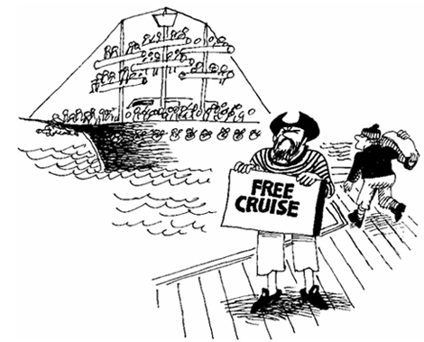
“Pirates know how to ACCRUE A CREW.”
- Bryan’s unpaid parking tickets ACCRUED to thepoint they would have paid for his college tuition.
- By the time he was eighteen he had ACCRUED agood knowledge of computer skills.
- The stock dividends ACCRUED so rapidly that wewere soon able to buy a new car.
ACME
(AK mee) n.
the highest point
ACNE
“The ACME of ACNE”
- Because he thought the stock market hadreached its ACME, Mr. Johnston told his stockbroker to sell.
- It had been a hot morning, and the sun had notyet reached its ACME.
- Lisa thought the story’s ACME was effective, butI thought the author should have told more.
ADDICT
(AD ikt) v./n.
to devote (oneself) habitually or
compulsively; one who is addicted
ATTIC
“Ed was so ADDICTED to cigarettes he would
sneak up in the ATTIC to smoke.”
- My mother’s only regret was that she allowedherself to become ADDICTED to nicotine. (v.)
- His friends worried constantly about him becausehe was a drug ADDICT. (n.)
- Betty has become so ADDICTED to soap operasshe talks of nothing else. (v.)
ADHERENT
(ad HEER unt) n.
a follower of a leader; supporter
ADHERE
“An ADHERENT ADHERING to his leader”
- The political candidate praised his ADHERENTSfor their support.
- People who believe in a particular religion aresaid to be ADHERENTS of that faith.
- Though the divorced princess was no longer partof the royal family, she continued to claim manyADHERENTS.
ADROIT
(uh DROIT) adj.
skillful; deft
DETROIT
“The auto workers of DETROIT are ADROIT
at manufacturing automobiles.”
- Many fourth graders are more ADROIT on thecomputer than their parents.
- Mr. Smith ADROITLY removed Eric from theclass before he could cause a problem. (adv.)
- Sebastian always wins at cards because he isso ADROIT at counting the cards that have beenplayed.
AESTHETIC
(es THET ik) adj.
having to do with artistic beauty
ATHLETIC
“Joan is both AESTHETIC and ATHLETIC.”
- Japanese rock gardens demonstrate AESTHETICvalues typical of a Far Eastern culture.
- The artist had an uncanny sense ofAESTHETICS; he could make a drawing of aplate of food look like a Thanksgiving feast.
- Jeannie molded the ugly lump of clay into anAESTHETICALLY pleasing masterpiece. (adv.)
AGOG
(uh GOG) adj.
highly excited by eagerness
EGGNOG
“Our dog is AGOG for EGGNOG.”
- Michelle was AGOG when her mom said shecould spend the night at her friend’s house.
- Elizabeth and Laura are always AGOG onChristmas morning.
- Jim sat AGOG when his name was announcedas the winner of the Pulitzer Prize.
AMBIVALENCE
(am BIV ah lents) n.
indecision; experiencing
contradictory emotions
AMBULANCE
“AMBIVALENCE between two AMBULANCES”
- Jim’s AMBIVALENCE toward his boss made himregret the day he accepted the job.
- Farmer Brown was AMBIVALENT about whetherto plant tomatoes or corn.
- Jeb’s AMBIVALENCE about which diet to choosemade him disregard the whole idea of losingweight.
AMBULATORY
(AM byu lah tor ee) adj.
of or for walking; capable of walking
AMBULANCE
“An AMBULATORY AMBULANCE”
- Although Robin’s foot was in a cast, she was stillAMBULATORY.
- Most AMBULATORY patients do not stayovernight at the hospital.
- The ninety-eight-year-old woman was not simplyAMBULATORY; she was spry.
ANCILLARY
(AN sih ler ee) adj.
helping; providing assistance; subordinate
CELERY
“The CELERY was ANCILLARY
to Peter’s sandwich.”
- Christopher worked hard to earn an ANCILLARYincome.
- Our chemistry workbook is ANCILLARY to thetextbook.
- The queen has her ANCILLARY maid prepareher clothes each morning.
ANIMATED
(an eh MATE ed) adj.
having life; alive; filled with
activity, vigor, or spirit
ANNA MADE IT
“ANNA became ANIMATED
when she finally MADE IT.”
- Bill was an ANIMATED speaker on any subjectthat interested him.
- Liz played the violin with intense ANIMATION.
- Tina became highly ANIMATED when she heardshe was voted the “most likely to succeed.”
ANIMOSITY
(an uh MAHS ih tee) n.
having a feeling of ill-will; bitter hostility
ANIMALS IN THE CITY
“The ANIMALS IN THE CITY showed their
ANIMOSITY toward development.”
- The two sisters had a deep-seated ANIMOSITYtoward each other.
- Displaying ANIMOSITY for his neighbor, Rogerbuilt a fence between their houses.
- Whenever the two rival teams encounter eachother, they show their ANIMOSITY by mockingthe other’s mascot.
ANNALS
(ANN ulz) n.
descriptive record; history
HANDLES
“Putting HANDLES on the sculptured ANNALS”
- The championship team of 1963 has gone downin the school’s ANNALS as the best team of thecentury.
- Books having to do with the history of somethingare often referred to as ANNALS.
- The ANNALS of history should teach us how toavoid war.
ANNEX
(an NEKS) v.
to add or attach
NECKS
“An ANNEXED NECK”
- The wedding reception was held in the ANNEX ofthe church.
- Because the school was growing so quickly,portable buildings were ANNEXED to the campus.
- The ANNEX being built adjacent to the hospital isnearly complete.
APEX
(AY peks) n.
the highest point; peak
APE X
“The APE planted his X at the APEX.”
- Our shadows were shortest when the sun hadreached its APEX.
- Christina marked the APEX before she finishedthe graphing problem.
- When the swing reached its APEX, we feared thelittle girl might go over the top.
APPEASE
(uh PEEZ) v.
to soothe; to pacify or
relieve by giving into
PEAS
“To APPEASE his parents, Johnny ate his PEAS.”
- To APPEASE his mother, Zachary alwayswalked the dog before dinner.
- The sergeant APPEASED his troops by givingthem an extra day of rest and relaxation.
- The trainer APPEASES the monkey by givinghim extra bananas.
ARMAMENT
(AHR mah muhnt) n.
military supplies and weapons;
the process of arming for war
ARM
“The long ARMS of ARMAMENT”
- The United States government believes itsnuclear ARMAMENT is a deterrent to thepossibility of a third world war.
- We equipped ourselves with a an ARMAMENT noenemy could match.
- Christopher is the ARMAMENTS officer for hisdivision.
ASCRIBE
(uh SKRIBE) v.
to attribute to a specific
cause, source, or origin
TRIBE
“The TRIBE ASCRIBED the nickname
‘Long Nose’ to the cavalry.”
- The physics professor ASCRIBES to the theorythat what goes up must come down.
- Samantha ASCRIBED her weight loss to a dietof fruits and vegetables.
- Kurt ASCRIBED his gold medal to hard workand dedication.
ASININE
(ASS uh nine) adj.
silly; stupid
ASS OF MINE

“This ASS OF MINE is ASININE.”
- My sister gave up working in a mental hospitalbecause she could no longer deal with ASININEbehavior.
- Adam is usually a nice guy, but sometimes he isso ASININE no one can stand him.
- The phone solicitor asked so many ASININEquestions that I finally hung up.
ASSAIL
(uh SAIL) v.
to attack violently
SAIL
“A ship’s SAIL being ASSAILED”
- The debaters ASSAILED each other with facts,each hoping to persuade the judges to seethings his way.
- While the defendant claims he did not ASSAILthe claimant, the claimant did have bruises toprove otherwise.
- Music ASSAILED our ears as we walked intothe concert hall.
ATONE
(uh TONE) v.
to make amends
ALONE
“He who does not ATONE, ends up ALONE.”
- Rachel ATONED for skipping school by gettingstraight As on her next report card.
- Nothing the convicted murderer said couldATONE for his crime.
- After ATONING for his past indiscretions, thepresident quickly won back the support of thenation.
ATTRITION
(uh TRISH un) n.
a gradual reduction or weakening;
a rubbing away
FISHIN’
“Over-FISHIN’ can lead to ATTRITION.”
- The war became a battle of ATTRITION, eachside wearing down the other.
- Because our school has so many older teachers,the ATTRITION rate is high.
- Washed ashore, the once jagged piece of glasshad become a smoothed gem due to theATTRITION of the sea and sand.
AUGMENT
(awg MENT) v.
to make or become greater as in
size, quantity or strength
CEMENT
“How not to AUGMENT a
driveway with CEMENT.”
- Engineers AUGMENTED the engine of the fighterjet which increased its speed.
- You can AUGMENT the water pressure byconstricting the hose nozzle.
- The president AUGMENTED his problems bydenying his involvement in any wrong doing.
BALEFUL
(BAYL ful) adj.
threatening; hurtful; malignant; ominous
BAIL FALL
“A BALEFUL BAIL FALLING”
- The prisoner sat in BALEFUL silence while thejudge read his jail sentence.
- Sharon cast a BALEFUL glance at her boyfriendwhen he said she had gained a lot of weight.
- The sky was BALEFULLY thick with clouds. (adj.)
BALK
(bawk) v.
to stop short and refuse to proceed
WALK
“A pirate BALKING at WALKING the plank.”
- Marcie was injured when her horse BALKED atthe last jump in the steeplechase.
- The judge BALKED the hearing until order wasrestored in his court.
- The warden took efforts to BALK the escapeattempt of the prisoners.
BANDY
(BAN dee) v.
to trade; to give back and forth;
to bat to and fro
CANDY
“Trick or Treaters like to BANDY CANDY.”
- The doctor said he wouldn’t BANDY words; thepatient needed an operation right away.
- The tennis players BANDIED the ball back andforth until one finally made an error and hit into thenet.
- BANDYING arms and hands from both sides,Jenny fought her way clear and escaped from theclutches of her admiring fans.
BARRAGE
(bah RAJ) n.
a curtain of artillery fire; any over-
whelming attack, as of words or blows
GARAGE
“Our GARAGE was BARRAGED
with eggs on Halloween.”
- As soon as we stepped out of the tent we weremet by a BARRAGE of mosquitoes.
- The attempt to attack was met by a BARRAGEof gunfire.
- The press shouted out a BARRAGE ofquestions as the president entered the room.
BATTERY
(BAT ur ee) n./v.
the unlawful beating of a person;
act of beating or pounding;
BATTERY
“BATTERY with a BATTERY” (v.)
- Bob was arrested for BATTERY after a bar roombrawl. (n.)
- After being BATTERED in a bar room fight, Stanwas rushed to the emergency room. (v.)
- Bob BATTERED Stan with a bar stool. (v.)
BAUBLE
(BAW bul) n.
a small, inexpensive trinket
BULL
“A BULL’S BAUBLE”
- Never one for BAUBLES, Diane always worereal diamonds.
- Mixed among the precious gems in Jennifer’sjewelry box were costume jewelry and otherBAUBLES.
- The child was delighted with the BAUBLE shereceived from her aunt.
BEDLAM
(BED lum) n.
a place or scene of noisy
uproar and confusion
BED LAMB
“BEDLAM in the LAMB’S BED”
- Before the new teacher took over, there was totalBEDLAM in the classroom.
- It was BEDLAM behind stage until the curtainwent up and the play began.
- Following the championship soccer match, thestadium was in a state of BEDLAM.
BENIGHTED
(be NI tid) adj.
being in a state of intellectual
darkness; ignorant; unenlightened
KNIGHT
“A BENIGHTED KNIGHT”
- Many BENIGHTED people became enlightenedduring the Renaissance.
- Cameron had never read a book but was soBENIGHTED that he did not realize he wouldnever be accepted into Harvard.
- He BENIGHTEDLY asked the professor howmuch money she would take to give him an A inher class. (adv.)
BEQUEST
(bi KWEST) n.
a legacy; something left to someone in a will
GO WEST
“Joe’s BEQUEST was to GO WEST.”
- If your parents leave you their house, the house isa BEQUEST from them to you.
- Hortensia’s jewelry was a BEQUEST from hermother.
- (BEQUEATH is a verb meaning the act of leavingsomething in a will.) Tim’s father BEQUEATHEDhis ring to his son who was pleased with theBEQUEST.
BEVY
(BEV ee) n.
a group of animals; an assemblage
HEAVY
“A BEVY of HEAVIES”
- Bud’s hunting dogs flushed out a BEVY of quail.
- A BEVY of groupies gathered outside to see thestar after her concert.
- While hot air ballooning over the plains of Africa,one may see BEVIES of animals.
BLAND
(bland) adj.
lacking flavor or zest; dull
LAND
“After months at sea Columbus kissed
the LAND, but found it BLAND.”
- The pudding was smooth though BLAND.
- The doctor put Edgar on a BLAND diet to soothehis stomach problems.
- Christopher’s BLAND sense of humor was oftenmisunderstood.
BOLSTER
(BOHL ster) v./n.
to support, as in a group; to
give a boost; n. a large pillow
HOLSTER
“Members BOLSTERED each other by
wearing their HOLSTERS.” (v.)
- The coach saw it was time to BOLSTER his team,so he gave them a pep talk. (v.)
- Jane knew she had to BOLSTER the support ofthe underclassmen if she hoped to win theelection. (v.)
- Since Jackie’s surgery, she has had to use a backBOLSTER when she sits. (n.)
BOMBASTIC
(bom BAS tik) adj.
high sounding; use of language
without much real meaning
BOMBS IN A BASKET
“The President‘s speech was so BOMBASTIC,
he was spitting BOMBS IN A BASKET.”
- The candidate’s BOMBASTIC speech was hardto understand because it made no sense.
- The BOMBASTIC article was obviously writtenby a reporter who didn’t do his research.
- Some people debate by shouting down theiropponents with BOMBASTIC language.
BOON
(boon) n.
a timely benefit; a blessing
BABOON
“A BOON for BABOONS”
- Construction of the new residential developmentwas a BOON to the community.
- The week-long rain was a BOON to the farmerswhose crops were withering from the drought.
- The decline of interest rates proved a BOON tothe real estate market; more families could affordto buy homes.
BOORISH
(BOOR ish) adj.
unmannered; crude; insensitive
BOAR
“A BOORISH BOAR”
- Bob’s BOORISH manners at the restaurantmade everyone uncomfortable.
- The BOORISH man pushed his way to the frontof the line without any concern for others.
- Al is seldom invited to any parties because of hisBOORISH personality.
BOOTLEG
(BOOT leg) v.
to smuggle; to make, sell, or
transport for sale illegally
BOOTS AND LEGS
“Stan was caught with BOOTLEG
BOOTS AND LEGS.”
- Scott was arrested when he attempted to sell aBOOTLEG CD.
- During Prohibition, all liquor in the United Stateswas BOOTLEG.
- On the streets of some cities BOOTLEGGERSsell just about anything. (n.)
BOOTY
(BOO tee) n.
loot; the spoils of war; goods or property
seized by force; a valuable prize
BOOTS
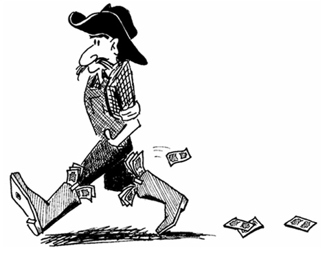
“Tex keeps his BOOTY in his BOOTS.”
- Some servicemen during World War II felt theywere entitled to all the BOOTY they couldcapture.
- Pirates kept their BOOTY in chests which theysometimes buried.
- The burglars were apprehended before theycould make off with the BOOTY.
BOVINE
(BOH vyne) adj.
of, relating to, or resembling an animal
such as an ox, cow or buffalo; dull
VINE
“A BOVINE on a VINE”
- The BOVINE features of the man scared thechildren.
- After examining the bones found in the field it wasdetermined that they were BOVINE remains andnot that of a human.
- Dr. Jones is a veterinarian who specializes inBOVINE diseases.
BRAZEN
(BRAY zun) adj.
bold, shameless; impudent
RAISIN
“A BRAZEN RAISIN”
- Robert’s BRAZEN presumption that he would beelected class president because of his goodlooks proved wrong when the votes werecounted.
- Tiger Woods’ BRAZEN attempt to reach thegreen in two strokes paid off with a birdie.
- The senator’s BRAZEN speech shocked theaudience.
BRINK
(bringk) n.
edge
SINK
“The mice were on the BRINK
of falling in the SINK.”
- “My nerves are on the BRINK!” shouted Mom,after our rock band rehearsed in the basement allnight.
- On the BRINK of disaster, Mike finally regainedcontrol of the skidding car.
- Grandpa Ed was on the BRINK of death when theparamedics arrived and saved his life.
BROUHAHA
(BROO hah hah) n.
an uproar; hubbub
BREW HA HA
“The witches created a real
BROUHAHA while stirring their BREW.”
- What began as a quiet party, suddenly turnedinto a BROUHAHA.
- A BROUHAHA started in the government officeswhen a threatening e-mail was received.
- My mother warned me that if the sleep-overturned into a BROUHAHA, she would send allmy friends home.
CAMARADERIE
(kah mah RAH der ee) n.
comradeship; friendship
COMRADES THREE
“CAMARADERIE amongst THREE COMRADES”
- The girls developed such a CAMARADERIE incollege that they remained friends for life.
- People find their jobs more enjoyable if there is asense of CAMARADERIE in their work place.
- Because we are both Miami Dolphins fans, wehad an instant CAMARADERIE.
CANOPY
(KAN uh pea) n.
a covering
CAN OF PEAS
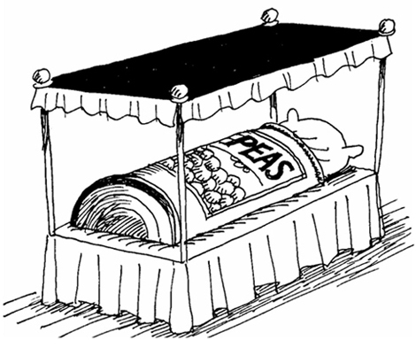
“A CAN OF PEAS sleeping under a CANOPY”
- The hurricane blew the CANOPY off the garage.
- At the beach, Karen likes to sit under a CANOPYto protect her delicate skin from the sun.
- We sat quietly under the forest CANOPY andlistened to all the beautiful bird calls.
CAPITULATE
(kah PICH uh layt) v.
to surrender under certain
conditions; to give in
CAP PITCH
“The Foreign Legionnaires
CAPITULATED with a CAP PITCH.”
- After continuous bombing, the enemy finallyagreed to CAPITULATE.
- The suspect finally CAPITULATED to policeafter realizing there as no escape.
- The seller studied the buyer’s final offer beforeCAPITULATING and signing the contract.
CARNIVORE
(KAR ni vour) n.
a flesh-eating animal
DINOSAUR
“Some DINOSAURS are CARNIVORES.”
- The most famous of the CARNIVOROUSdinosaurs was the Tyrannosaurus Rex.
- Jan jokingly calls her brother a CARNIVOREbecause all he wants for dinner is meat.
- Alligators and crocodiles are CARNIVORES.
CARRION
(KAIR ee un) n.
dead and rotting flesh
CARRY ON
“CARRION CARRY ON luggage”
- After mauling its prey, the lion left the CARRIONto the hyenas.
- Days after the battle, the battlefield was litteredwith CARRION of brave soldiers.
- CARRION is a vulture’s main source of food.
CASCADE
(kas KAYD) n./v.
a waterfall; to fall, pour or rush
like a waterfall;
LEMONADE
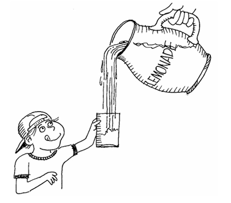
“A CASCADE of LEMONADE” (n.)
- Rachel’s beautiful long hair CASCADED downher back. (v.)
- We decided to have our picnic near theCASCADE. (n.)
- When Marta hit the jackpot, coins CASCADEDfrom the slot machine. (v.)
CATACLYSM
(KAT ah kliz um) n.
a violent upheaval or change
CAT CLINTON
“President CLINTON’S CAT is about
to create a CATACLYSM.”
- The CATACLYSM generated by World War Ihad effects which lasted for generations.
- The sudden earthquake was CATACLYSMIC inits destruction. (adj.)
- The United Nations does everything within itspower to avoid the CATACLYSM of a ThirdWorld War.
CATARACT
(KAT ah rakt) n.
a large waterfall; a flood;
an eye abnormality
CADILLAC
“John preferred going over the
CATARACT in his CADILLAC.”
- Niagara Falls is probably the most well-knownCATARACT in North America.
- The storm flooded the town with a CATARACT ofrain.
- The old dog developed CATARACTS on both hiseyes.
CAVALIER
(kav ah LEER) adj./n.
casual; carefree and nonchalant; arrogant
disregard; a gallant gentleman
CAVALRY
“Colonel Jones was CAVALIER
with his CAVALRY troops.”
- We could all tell before the wedding that Phil hada CAVALIER attitude toward marriage. (adj.)
- The movie about the dashing CAVALIERS wonmany awards. (n.)
- Darren was so CAVALIER that he always kisseda lady’s hand when first introduced. (adj.)
CHASTISE
(CHAS tyze) v.
to discipline; to criticize severely
CHEST SIZE
“The trainer CHASTISED John
for his puny CHEST SIZE.”
- The teacher began to CHASTISE her misbehavingstudents.
- My mother CHASTISED us for playing ball in thehouse.
- Our coach CHASTIZED us for losing the game.
CHOLERIC
(KAHL ur ik) adj.
hot-tempered; quick to anger
COLLAR
“Our dog became CHOLERIC
whenever we COLLARED him.”
- When my dad gets in one of his CHOLERICmoods, everyone stays clear.
- The neighbor’s CHOLERIC dog is always chainedto the tree.
- The bullfighter ran from the CHOLERIC bull.
CIRCUMSPECT
(SUR kum spekt) adj.
cautious; heedful of situations and
potential consequences
INSPECT
“A CIRCUMSPECT INSPECTION”
- In his usual CIRCUMSPECT manner, Frank firstassured himself against all losses before makingan investment.
- Pat’s five-year-old CIRCUMSPECTLY looksboth ways before crossing the street. (adv.)
- Because the judge was CIRCUMSPECT, hewas usually considered impartial.
CIRCUMVENT
(sur kum VENT) v.
to surround; enclose; bypass
CIRCLE TENT
“The Indians CIRCUMVENTED the TENT.”
- We were able to CIRCUMVENT the heavy trafficby taking a short-cut.
- The politician CIRCUMVENTED an argument bychanging the subject.
- The general CIRCUMVENTED the enemy bydistracting them with a minor campaign.
CLONE
(klohn) n.
an exact duplicate
CONE
“CLONE CONES”
- The scientist CLONED a lab rat.
- Identical twins may be called CLONES.
- McDonalds restaurants are CLONES of eachother.
COERCE
(koh URS) v.
to force someone by threatening
or physically overpowering him
HORSE
“COERCING a HORSE”
- The burglar’s confession was COERCED by thepolice.
- Elizabeth was COERCED by her sister to takeanother cookie from the jar.
- It was evident from the video tape that thehostage was COERCED to lie about the status ofher condition.
CONFISCATE
(KON fi skayt) v.
to seize
CON CAKE
“The CON’S CAKE was CONFISCATED.”
- The teacher CONFISCATED Billy’s gum.
- The police raided the suspect’s apartment whileCONFISCATING all his illegal drugs.
- The Internal Revenue Service threatened toCONFISCATE the accountant’s files if he didn’tpay his delinquent taxes.
CONTINUUM
(kun TIN yoo um) n.
a continuous whole without
clear division into parts
CONTINUE
“A beam of light is a CONTINUUM
which CONTINUES from its source.”
- A spectrum of light is a CONTINUUM in whicheach color blends with its neighbors.
- At the carnival, a CONTINUUM of weavingdances moved in a seemingly endless chain.
- Albert Einstein believed that space and time arenot distinct dimensions, but a CONTINUUM,which he called the Theory of Relativity.
CONUNDRUM
(kuh NUN drum) n.
a dilemma; any problem or puzzle
NUN’S DRUM
“The NUN’S DRUMS created a CONUNDRUM.”
- In most mystery novels, the CONUNDRUM issolved by the end.
- Justin’s CONUNDRUM after high school waswhether he should go find a job or go to collegefirst.
- During the long drive, Jean invented entertainingCONUNDRUMS to help keep Jeff awake.
COPIOUS
(KOH pee us) adj.
abundant; plentiful
CUP

“A COPIOUS CUP of coffee”
- Farmer Brown was overjoyed with his COPIOUScrop of tomatoes.
- David gave COPIOUS reasons why he should beallowed to stay home from school.
- Professor Lang always gave long lectures andexpected his students to take COPIOUS notes inhistory class.
CORPULENT
(KOR pew lent) n.
fat; obese
CORPORAL
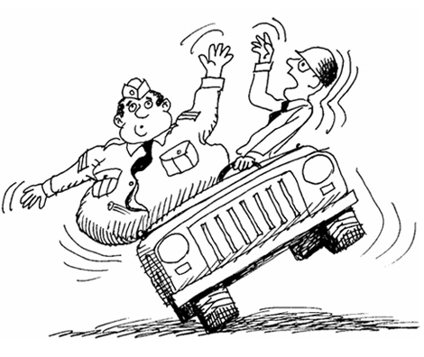
“A CORPULENT CORPORAL”
- England’s King Henry VIII was known for hisCORPULENT build.
- Some football players look CORPULENT but areactually very muscular.
- CORPULENT is a euphemism for fat.
COURIER
(KUR ee ur) n.
a messenger
CARRY HER
“The CARRY HER COURIER Service”
- The COURIER delivered an important letter fromthe general.
- Frederick works as a COURIER for UnitedParcel Service.
- The spy acted as a COURIER, carrying secretinformation between the United States andEurope.
COVERT
(KOH vert) adj.
secret; hidden; concealed
COVER
“Secret agents COVERTLY
COVER their true identities.” (adv.)
- Sam carried out COVERT missions for the CIA inChina during the Korean War.
- Spies usually operate COVERTLY. (adv.)
- OVERT is the opposite of COVERT. OVERTmeans open or unconcealed.
CRONY
(KROH nee) n.
a close friend or companion
BOLOGNA
“A BOLOGNA and his CRONY”
- Jim and his CRONIES go to the football gameson Friday nights.
- John Dillinger and his CRONIES robbed theFirst National Bank.
- Edward is honored to be considered one of hisboss’s CRONIES.
CRUX
(KRUKS) n.
main point; the heart of the matter
DUCKS
“The DUCKS were the CRUX of the traffic jam.”
- After Harry rambled on for hours, it was difficult tounderstand the CRUX of his speech.
- The mechanic thought the CRUX of the car’sproblem was a bad water pump.
- The CRUX of the plot happened just when thesuspense was unbearable.
CRYPTIC
(KRIP tik) adj.
having an ambiguous or
hidden meaning
LIPSTICK

“A CRYPTIC note in LIPSTICK”
- Jim’s messages were so CRYPTIC; I wasbaffled by their meaning.
- Breaking Germany’s CRYPTIC codes duringWorld War II helped the Allies win the war.
- While exploring the cave, we stumbled across aCRYPTIC message written on the wall.
CUPIDITY
(kyoo PID ih tee) n.
excessive greed, especially for money
CUPID
“CUPID’S CUPIDITY”
- The thief’s CUPIDITY was exceeded only by hisignorance.
- Bob’s obsessive CUPIDITY alienated him from hisfamily and friends, because all he could thinkabout is making money.
- The CUPIDITY of the Roman upper-class led tothe demise of the Roman Empire.
CURB
(kurb) v.
to control or check
HERB
“HERB could not CURB his love of flying.”
- Weight Watchers’ mission is to help corpulentpeople CURB their appetites.
- She wore a nicotine patch to try to CURB heraddiction to smoking.
- By making them raise their hands, the newteacher CURBED her students’ tendency toshout out the answers.
CURSORY
(KUR suh ree) adj.
rapid and superficial; performed with
haste and scant attention to detail
CURSE
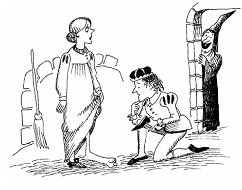
“A CURSORY glance by the prince told
him Cinderella’s foot had been CURSED.”
- Dad’s CURSORY effort to repair the roof made itleak even more.
- The general berated the private for his CURSORYattempt to clean his locker.
- The general contractor was so CURSORY in theconstruction of our home that he forgot to lay theplumbing lines.
DEFUNCT
(dee FUNGKT) adj.
dead or inactive; having
ceased to exist
JUNK
“Chinese JUNKS are now DEFUNCT.”
- The invention of the automobile made riding ahorse and carriage a DEFUNCT mode oftransportation.
- Although Shakespeare has been dead forcenturies, his plays will never be DEFUNCT.
- In Moby Dick, Ishmael tells the story of aDEFUNCT whaling ship, the Pequod.
DEMISE
(dih MIZE) n.
death; the end
EYES
“The EYES told of Dracula’s DEMISE.”
- Chuck was devastated by the DEMISE of his petturtle.
- General George Custer met his DEMISE at LittleBig Horn.
- Joe’s broken leg led to the DEMISE of his footballcareer.
DEPLOY
(dih PLOY) v.
to arrange strategically
TOY
“David DEPLOYED his TOYS to attack his sister.”
- The general’s intelligent DEPLOYMENT of histroops along the eastern front won the battle.
- The admiral DEPLOYED his ships at the entranceto the harbor.
- By DEPLOYING all his resources, Phil was ableto buy the car.
DEPRAVITY
(dih PRAV ih tee) n.
extreme wickedness
CAVITY
“Dr. Hook has a DEPRAVITY for CAVATIES.”
- Ed’s mother attributed his DEPRAVITY to violentmovies and video games.
- Muhammad Ali was famous in the ring for hisDEPRAVITY toward opposing boxers.
- The principal could not believe Jason wascapable of such DEPRAVED activities.
DEPRECATE
(DEP ri kayt) v.
to express disapproval of
DEBRA’S CAKE
“No one dared DEPRECATE DEBRA’S CAKE.”
- Josh’s parents DEPRECATED his study habits ofalways waiting to the last minute.
- The teacher was DEPRECATORY when sherealized no one had completed the assignment. (adj.)
- Jerry Seinfeld and many other comics are famousfor self-DEPRECATING humor.
DESPOT
(DES puht) n.
an absolute ruler
THIS POT
“ THIS POT is the DESPOT.”
- The DESPOT declared his birthday a nationalholiday.
- My big brother thinks he is the DESPOT of thefamily; he is always bossing everyone around.
- When mom gives us our chores, she rules uslike a DESPOT.
DETER
(dih TUR) v.
to discourage; to keep someone
from doing something
WEATHER
“WEATHER never DETERRED
Jody from playing golf.”
- Nothing could DETER John from his ambition tobe a doctor.
- Rachel didn’t let her handicap DETER her fromcompeting in the triathlon.
- Bryan’s broken leg DETERRED him from playingsoftball.
DEVOID
(dih VOID) adj.
entirely without; lacking
AVOID
“AVOID diving into a pool DEVOID of water.”
- It was apparent that Bill was DEVOID of tablemanners as we watched him eat his entire mealwith his fingers.
- The small deserted island was DEVOID ofdrinking water.
- Our football team is totally DEVOID of anoffense; we haven’t scored a touchdown in the last four games.
DIATRIBE
(DYE uh tryb) n.
a bitter verbal attack
TRIBE
“Sitting Bull retaliated with a DIATRIBE
after his TRIBE was pied in the face.”
- Coach Johnson’s DIATRIBE was futile becausethe referee refused to reverse his decision.
- The prosecuting attorney began his openingstatement with a DIATRIBE directed toward thedefendant.
- After being struck by a water balloon, the old manretaliated with a lengthy DIATRIBE which scaredaway the deviant kids.
DIFFIDENT
(DIF ih dent) adj.
lacking self-confidence; timid
DIFFERENT
“Is Lord Wellington DIFFIDENT about
swimming or is he DIFFERENT?”
- The DIFFIDENT boy always sat alone in thecafeteria.
- In order to assuage her DIFFIDENCE, Beth waspersuaded to enroll in drama class.
- The DIFFIDENT kitten was stuck up in the treefor hours.
DIMINUTION
(dih muh NYOO shun) n.
the act or process of diminishing; reduction
AMMUNITION
“A DIMINUTION of AMMUNITION”
- The crew of the crippled research submarine wereconcerned with the DIMINUTION of their airsupply.
- There was an obvious DIMINUTION of thetemperature as the sun began to set.
- Due to the higher cost of living, Drew noticed a DIMINUTION of his checking account.
DIRE
(DYE ur) adj.
disastrous; desperate
FIRE

“A DIRE FIRE”
- The hurricane struck the Florida Keys with DIRE results; all the buildings were flattened.
- After the girls’ wallets were stolen on vacation,they were in DIRE straits; they had no money,no shelter, and not even a quarter to call home.
- Jeff’s DIRE predictions about a stock marketcrash unfortunately came true, and noweveryone in his family is broke.
DISCONCERT
(dis cun SURT) v.
to disturb the composure of; upset; to
frustrate (as a plan) by throwing into disorder
THIS CONCERT
“THIS CONCERT is
DISCONCERTING to my father.”
- Some students find it very DISCONCERTING tolisten to music while studying.
- At times a baby may be unaffected by loudnoises while at others it may beDISCONCERTED by a quiet sound.
- I don’t mean to DISCONCERT your plans, but Ican’t attend your party on Saturday.
DISHEVEL
(dih SHEV ul) v.
to make untidy; to disarrange the
hair or clothing of
SHOVEL
“Tommy DISHEVELED his
aunt with his SHOVEL.”
- Andrea’s hair became DISHEVELED in the strongbreeze.
- After the hurricane, our yard was DISHEVELED with broken branches and debris.
- From the looks of Bryan’s DISHEVELED desk,one would think he is a disorganized person.
DIURNAL
(dye UR nul) adj.
occurring every day; occurring
during the daytime
DAY TURTLE
“A DIURNAL TURTLE”
- Brad enjoys his DIURNAL cup of coffee while hereads the newspaper.
- Sunrise is a DIURNAL occurrence.
- DIURNAL is the opposite of nocturnal, whichmeans occurring during the night.
DIVERSE
(dih VURS) adj.
different; varied
DIVERS
“ DIVERSE sky DIVERS”
- Humphrey had a DIVERSE collection of classicautomobiles.
- The California Gold Rush attracted people ofDIVERSE backgrounds: farmers, bankers andtradesmen made the journey to the gold fields.
- Randy had a DIVERSE education with degrees inmedicine, law, and business.
DOFF
(dof) v.
to take off; to remove
OFF
“To DOFF is to take OFF.”
- A gentleman should always DOFF his hat to a lady.
- The football player ran to the sideline, DOFFED his helmet and downed a huge cup of water.
- The nurse instructed me to DOFF my clothesand don a hospital robe.
DOGMATIC
(dawg MAT ik) adj.
characterized by an authoritative, often
arrogant, assertion of opinions or beliefs
DOG
“A DOGMATIC DOG trainer”
- Grandpa was always DOGMATIC about his viewson politics.
- The tyrant was a DOGMATICAL ruler who wouldnot permit anyone to disagree with him.
- The opinions or ideas DOGMATICALLY assertedby a DOGMATIC person are knows as DOGMA.
DOLEFUL
(DOHL ful) adj.
sorrowful; melancholy
BOWL FULL

“Billy was DOLEFUL because he had to eat
a BOWL FULL of split pea soup.”
- The DOLEFUL expression on the dog’s facesuggested he thought he had been deserted byhis owner.
- A DOLEFUL procession of mourners followedthe hearse to the cemetery.
- When the doctor arrived to see her ailinghusband, Jim’s wife DOLEFULLY opened thedoor to let him in. (adv.)
DOLT
(DOHLT) n.
a stupid person
VOLT
“A DOLT gets the VOLTS”
- The frustrated teacher said he had a class full of DOLTS.
- Only a DOLT would put his shoes on backward.
- Dad always said, “don’t be a DOLT and stay in school.”
DON
(don) v.
to put on
Link: ON
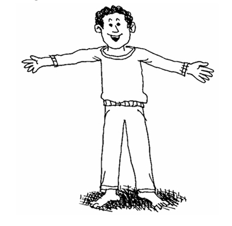
“To DON is to put ON.”
- Bryan DONNED his scuba gear and rolled offthe boat into the ocean.
- Ed took a deep breath, DONNED his parachute,and jumped out of the airplane.
- As the storm intensified, Bill went below deck to DON his foul weather gear.
DOUR
(dowr) adj.
severe; gloomy; stern
Link: FLOWER
“A DOUR FLOWER”
- The garbage collector was a DOUR older manwho never had a kind word for anyone.
- When the legionnaire begged the Arab for water,the Arab DOURLY replied he barely had enoughfor his camel. (adv.)
- The barren DOURNESS of the infertile land ontheir farm made it almost impossible for Tim’sfamily to make a living as farmers. (n.)
DWELL
(dwel) v.
to remain for a time; to reside;
to focus attention on; to speak
or write about at length
HILL
“Ants DWELL in a HILL.”
- Our coach told the team not to DWELL on losingone game and start thinking about winning thenext.
- The newspaper article DWELLS on the need forbetter schools.
- Don’t DWELL on the negative; think of thepositive.
EBULLIENCE
(ih BULL yents) n.
lots of enthusiastic; bubbling with excitement
BULL DANCE

“EBULLIENCE at the BULL DANCE”
- Chris’s EBULLIENT personality won her manyfriends. (adj.)
- Joan’s EBULLIENCE for her work is obvious inher time and effort.
- The bride’s EBULLIENCE was evident in way she interacted with her guests.
EDIFICATION
(ed ih fih KAY shun) n.
enlighten; instruct
ED ON VACATION
“ED is getting some EDIFICATION
while he is ON VACATION.”
- Many parents send their children to SundaySchool for moral EDIFICATION.
- Etiquette is an important part of one’s socialEDIFICATION.
- We would have been lost at the art show had notprograms been provided for our EDIFICATION.
EGG
(eg) v.
to encourage or incite to action
EGG
“Humpty was EGGED to jump.”
- The bully EGGED the little boy to fight until hecried.
- My friends EGGED me to try out for the tennisteam.
- Without the crowd EGGING me on, I don’t think Icould have finished running the marathon.
ELITE
(eh LEET) n.
the best or most skilled
members of a group
FEET
“The ELITE wine makers have big FEET.”
- Members of the school’s academic teams areamong the educational ELITE.
- The city was defended by an ELITE corps ofsoldiers. (adj.)
- An ELITIST is a snob; to be ELITIST is to be snobby.
ELOCUTION
(el oh KYOO shun) n.
the art of public speaking
EXECUTION
“ELOCUTION is a good way to
postpone an EXECUTION.”
- Classes in ELOCUTION are helpful to thosewho seek a career in politics.
- The Greek orator Demosthenes had a speechimpediment, but he taught himself properELOCUTION by reciting poetry.
- Mark Twain was known for his ELOCUTION aswell as his stories.
ELOQUENT
(EL oh kwent) adj.
extremely expressive in speech,
writing, or movement
ELEPHANT
“An ELOQUENT ELEPHANT”
- Stan gave a moving, ELOQUENT speech.
- Shakespeare’s plays are very ELOQUENTLYwritten. (adv.)
- As the queen approached, the knight respondedwith an ELOQUENT bow.
ELUCIDATE
(ih LOO si dayt) v.
to make clear and explain fully
LUCY DATE
“LUCY, Gary’s blind DATE,
ELUCIDATED her intentions.”
- Greg ELUCIDATED his description of theassailant to the officer.
- Doctors should always ELUCIDATE the medicaljargon they use with their patients.
- Brian Williams had a gift for ELUCIDATING newsto his national TV audience.
EMBROIL
(im BROYL) v.
to involve in argument or hostile
action; to throw in disorder
BOIL
“The lobster preferred EMBROILING to BOILING.”
- Most of the civilized world was EMBROILED inconflict during World War II.
- The attorneys were EMBROILED in causticargument.
- An EMBROILING situation arose when the rockconcert was cancelled. (adj.)
EMINENT
(EM ih nent) adj.
standing out, renowned;
distinguished; prominent
EMMA’S TENT
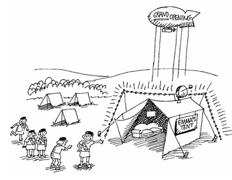
“EMMA’S TENT was the most
EMINENT of the girl scouts tents.”
- Michael Jordan is considered one of the mostEMINENT basketball players of the 20th century.
- The most EMINENT feature of the hammerheadshark is its hammer-shaped head.
- The audience fell silent when the EMINENTsinger walked on stage.
EMPHATIC
(em FAT ik) adj.
forcibly expressive
FAT TICK
“Rex became EMPHATIC when he
saw a FAT TICK on his back.”
- The scientist was EMPHATIC that no flammablematerials be brought to the test site.
- The crowd’s EMPHATIC reaction of their teamwinning the game was a sight to see.
- The sign EMPHATICALLY warned visitors tokeep their hands out of the cage. (adv.)
ENHANCE
(en HANS) v.
to improve; to intensify
DANCE
“The band thought new speakers would
ENHANCE the DANCE music.”
- Sheila believed applying a lot of makeup wouldENHANCE her looks, when in reality it made herlook like a clown.
- Bob ENHANCED his race car’s performance byinstalling a more powerful engine.
- Since ENHANCING my computer’s modem, I amable to do research more quickly.
ENMITY
(EN mi tee) n.
hostility; deep-seated hatred
IN MY TEA
“Sir Howard, I have great ENMITY for
your dog’s tongue IN MY TEA.”
- The ENMITY between the teams was apparentto the spectators.
- When she saw his new girlfriend, it was not easyto disguise her ENMITY.
- The ENMITY between the feuding families isvery obvious in the book.
ESCAPADE
(ES kah payd) n.
an adventurous unconventional act
ICE CAPADES
“An ESCAPADE at the ICE CAPADES”
- Mary’s ESCAPADE was harmless, but it causedher parents some concern.
- Joe and Alan’s ESCAPADE at the beach duringSpring Break is one they will never forget.
- Hiking in the Rockies was our most recent familyESCAPADE.
ESCHEW
(es CHOO) v.
to avoid or shun
AH CHEW
“It is a good policy to ESCHEW all AH CHEWS!”
- We were advised to ESCHEW riding the subwayat night.
- The doctor told Danny to ESCHEW the sun’sdangerous rays by applying sunscreenwhenever he went outside.
- Sally ESCHEWS anyone who uses badlanguage.
ESPOUSE
(eh SPOWZ) v.
to adopt; to support
SPOUSE
“Harold’s SPOUSE ESPOUSED a large family.”
- I ESPOUSE the idea that we eat dessert beforedinner.
- The candidate for governor ESPOUSED a one-centsales tax to build a new stadium.
- Because Barbara was always ready to ESPOUSEstudents’ privileges, she was elected senior classpresident.
ESTRANGE
(eh STRAINJ) v.
to alienate; to treat as a stranger; to
turn an affectionate attitude into an
indifferent or unfriendly one
STRANGE
“Nancy became ESTRANGED from her
husband because he was so STRANGE.”
- Lawrence feared his candid views of the companywould ESTRANGE him from his coworkers.
- Hardly recognizing anyone, Ed felt ESTRANGEDfrom his old high school classmates during his25th reunion.
- The governor stated that capital punishment doesnot deter crime, and in so doing ESTRANGEDhimself from many of his erstwhile supporters.
ETHEREAL
(ih THEER ee ul) adj.
very light; airy; delicate; heavenly
CEREAL
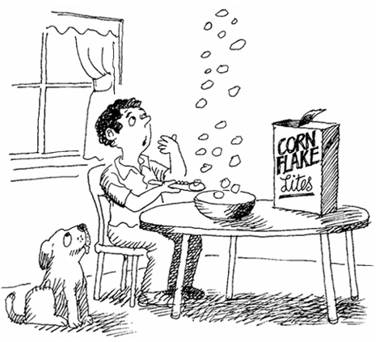
“ETHEREAL CEREAL”
- An ETHEREAL mist covered the hill in themorning.
- The ETHEREAL scent of freshly baked apple piepermeated the kitchen.
- Elizabeth had the singing voice of an ETHEREALangel.
EVINCE
(ih VINCE) v.
to show or demonstrate clearly
EVENTS
“EVENTS soon would EVINCE
Tom’s short-sightedness.”
- The prince wished to EVINCE his love for thefair maiden.
- The new billboard EVINCED our sales message.
- Ed spent hours EVINCING the perfect techniqueof throwing the shot putt.
EXALT
(ig ZAWLT) v.
to raise high; glorify
SALT
“Everyone EXALTED the SALT as
king of the condiments.”
- The fireman was EXALTED by the press forsaving the child from a burning building.
- Elizabeth felt EXALTED when she scored 1600on her SAT.
- Our society tends to EXALT actors and sportstars rather than teachers and professors.
EXEMPLAR
(ig ZEM pler) n.
a model or original
EXAMPLE
“An EXAMPLE of an EXEMPLARY dog.” (adj.)
- Charlie has always been an EXEMPLARYstudent. (adj.)
- Notre Dame, in Paris, is an EXAMPLAR of ahistoric Roman Catholic Marian cathedral.
- Shakespeare's poetic form is an EXEMPLAR of iambic pentameter.
EXODUS
(EK suh dus) n.
a mass departure
EXIT BUS
“A BUS EXODUS from the rear EXIT”
- There was an immediate EXODUS of people fromthe theater when someone yelled, “Fire!”
- After the hurricane evacuation was announced,there was mass EXODUS of people from thetown.
- The forest fire created an EXODUS of animals.
EXONERATE
(ig ZON er ate) v.
to free from accusation or blame; to
free from a responsibility or task
HIS HONOR WAS LATE
“HIS HONOR WAS too LATE to
EXONERATE the innocent prisoner.”
- When he was released from jail, he finally feltEXONERATED of his crime.
- The general wanted to EXONERATE the captainof his war crimes.
- The man was EXONERATED by a jury of hispeers even though public opinion was not on hisside.
EXPATRIATE
(eks PAY tree ayt) v./n.
to exile, banish; leave one’s country (either
by force or by desire); one who has taken up
residence in a foreign country
PATRIOT
“EXPATRIATING a PATRIOT” (v.)
- Fidel Castro EXPATRIATED many of Cuba’s formerPATRIOTS who no longer agreed with him. (v.)
- Some American communists EXPATRIATED to theSoviet Union during the Cold War. (v.)
- Ernest Hemingway was an American EXPATRIATEwho lived in Cuba. (n.)
EXTRUDE
(ik STROOD) v.
to force out, as through a small opening
INTRUDE
“An INTRUDER gets EXTRUDED”
- Toothpaste EXTRUDES from the tube when yousqueeze it.
- Black oil EXTRUDED from the engine block.
- Plastic bags are usually manufactured by largeEXTRUSION machines. (adj.)
FETTER
(FET ur) v./n.
to restrain; to hamper; a shackle
FEATHER
“A FETTERED FEATHER” (v.)
- The prisoners were FETTERED by shacklesaround their ankles. (v.)
- The cowboy FETTERED his horse so it would stillbe there when he wanted to go home. (v.)
- The prisoner’s FETTER was attached to hisankles, preventing him from running. (n.)
FIASCO
(fee AS koh) n.
a complete or humiliating failure
TABASCO
“A TABASCO FIASCO ”
- The children’s plan to release all the animals atthe Humane Society was an utter FIASCO.
- Our government has been involved in numerousFIASCOES which will go down in history.
- Teresa ordered $300 worth of Girl Scout cookiesand her parents had to pay for the FIASCO.
FORBEARANCE
(for BEAR unts) n.
a refraining from the enforcement
of something; patience
FOUR PARENTS
“FOUR PARENTS exhibiting FORBEARANCE”
- Sitting in traffic on the highway requires greatFORBEARANCE.
- The hunter showed great FORBEARANCE bysitting in the tree stand all day long.
- Social workers must possess FORBEARANCE todeal with their difficult clients.
FOREBODE
(for BODE) v.
to predict or foretell
FOUR BONES
“The gypsy FOREBODED
FOUR BONES in Rex’s future.”
- In ancient Greece it was believed that a sagecould FOREBODE the future.
- A FOREBODING rain began working its waytoward us. (A FOREBODING is the feeling thatsomething is about to happen.) (adj.)
- The policeman’s purple face and clenched fistsFOREBODE his anger.
FORTE
(for TAY) n.
something in which a person excels
FORT
“Steve’s FORTE is building tree FORTS.”
- Spelling has always been Zachary’s FORTE.
- Tanya is a born actress, so the directorhighlighted her FORTE by giving her the lead inthe play.
- Although he loved to play baseball, his FORTE isreally golf.
FORTHRIGHT
(FORTH rite) adj./n.
directly forward; without hesitation;
a straight path
FOURTH FROM THE RIGHT
“The soldier FOURTH FROM
THE RIGHT was FORTHRIGHT.”
- Whenever I want a FORTHRIGHT opinion, Ialways ask my two-year-old son. (adj.)
- The boss asked everyone to be FORTHRIGHTat the company meeting. (n.)
- When Kathy asked Mark if her dress made herlook fat, she wasn’t expecting his answer to beso FORTHRIGHT. (n.)
FRANK
(frank) adj.
marked by free and sincere expression
FRANKFURTER
“A FRANK FRANKFURTER ”
- Jim’s FRANK remark about Marge’s weight madeher cry.
- The doctor was FRANK about Lisa’s prognosis.
- The boss encouraged us to speak FRANKLY atthe meeting. (adv.)
FRAY
(fray) n.
fight or scuffle; brawl
HAY
“A FRAY in the HAY”
- The party turned into a FRAY when the bikersshowed up.
- A FRAY occurred in the cafeteria when Kirkspilled his lunch on Jody.
- When Mark was beaned by the pitcher, a FRAYensued between the teams.
FUSILLADE
(FYOO se lahd) n.
a rapid outburst or barrage
FUSELAGE
“The aircraft FUSELAGE received
a FUSILLADE of gunfire.”
- The soldier jumped behind a concrete wall forprotection from the FUSILLADE of gunfire.
- The guard at the gate was surprised by aFUSILLADE of arrows which allowed the invadersto gain entrance to the castle.
- The defense lawyer overwhelmed the witness witha FUSILLADE of questions.
GAMBIT
(GAM bit) v.
to take a risk for some advantage
GAMBLE
“A GAMBIT not worth the GAMBLE”
- The general’s GAMBIT paid off when his troopswon the battle.
- The chess player’s GAMBIT was unsuccessfulwhen he was put in checkmate.
- The employee’s daring GAMBIT won him a raisefrom his boss.
GARNER
(GAHR nur) v.
to gather or store
GARDENER

“The GARDENER GARNERED a large crop.”
- Maria worked to GARNER all the information shecould before she started writing her report.
- Throughout her lifetime, Bernice GARNEREDenough antique furniture to fill five houses.
- Jonathan was guilty of GARNERING illegalinformation on the internet.
GASTRONOMY
(ga STRON uh mee) n.
the art of good eating;
culinary customs or style
ASTRONOMY
“Sam enjoyed ASTRONOMY, while
Big Bernard enjoyed GASTRONOMY.”
- One can learn a great deal about a country bystudying its GASTRONOMY.
- French GASTRONOMY is distinguished by theuse of wines and sauces.
- Toni developed her GASTRONOMY whileattending culinary school.
GRADIENT
(GRAY dee unt) n.
a rate of inclination; a slope
GREAT AUNT
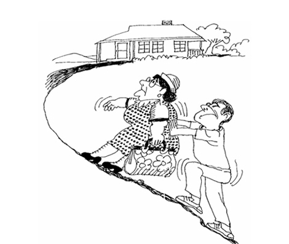
“It’s tough getting a GREAT AUNT
up a steep GRADIENT.”
- The GRADIENT of the hill made it difficult topeddle my bike.
- The GRADIENT of metabolism is important in thefield of biology.
- The teacher put the grades on a GRADIENT sothat more students would do well on the hard test.
GRAVITY
(GRAV ih tee) n.
seriousness or importance
GRAVITY
“Sir Isaac Newton about to realize
the GRAVITY of GRAVITY”
- Young children don’t understand the GRAVITY ofplaying with matches until they burn themselves.
- The GRAVITY of the situation multiplied whenFrank made the hole in the boat bigger whiletrying to patch it.
- We didn’t realize the GRAVITY of Steven’s drugaddiction until it was too late.
GREGARIOUS
(gruh GAIR ee us) adj.
seeking and enjoying the
company of others; sociable
GREG HILARIOUS
“GREGARIOUS GREG
was HILARIOUS.”
- Paige was so GREGARIOUS she hated to bealone.
- Carol, to the contrary, was not GREGARIOUS.At parties she rarely talked with anyone.
- Bernard’s GREGARIOUS nature made him anenjoyable person.
GULLIBLE
(GUL ih bul) adj.
easily cheated or fooled
GULL
“A GULLIBLE GULL”
- Joel could not believe he had been so GULLIBLEas to believe his friend’s wild story.
- Con artists rely on the GULLIBILITY of people totake money from their victims. (n.)
- The elderly woman GULLIBLY gave her creditcard number to the man on the phone. (adv.)
HAMPER
(HAM pur) v.
to prevent the free movement, action,
or progress of; to hinder or impede
HAMPER
“A clothes HAMPER HAMPERING traffic”
- His small stature HAMPERED Dan’s chances ofmaking the football team.
- Not routinely changing the car’s oil will HAMPERits performance.
- A thunderstorm HAMPERED our plans of goingto the beach.
HEARTEN
(HAHR tin) v.
to give strength, courage,
or hope; to encourage
HEART
“A HEART patient receiving
not so HEARTENING news”
- The congregation received some HEARTENINGwords from their pastor.
- It was HEARTENING to receive so many cardsfrom my friends when I was in the hospital.
- Our coach gave a HEARTENED speech thatmade us confident we would win the game.
HIATUS
(hye AY tus) n.
a gap or an interruption in space,
time, or continuity; a break
BETWEEN US
“A HIATUS BETWEEN US”
- Emily looked to Christmas Break as a welcomeHIATUS from the drudgery of school work.
- Susan asked for a three month HIATUS fromwork to spend time with her new baby.
- After reviewing the tax plat, Richard found aHIATUS of ownership between his property andhis neighbor’s.
HIERARCHY
(HYE er ahr kee) n.
categorization of a group
according to ability or status
HIGH ARCH
“The HIGH ARCH of HIERARCHY”
- Ed was very low on the company’s HIERARCHY;he only delivered the mail and emptied trash.
- Chief Sitting Bull was at the top of the tribe’sHIERARCHY.
- In the 1700s one’s rank in the HIERARCHY ofnoble birth often determined his wealth.
ICONOCLAST
(ahy KON oh klast) n.
one who attacks and seeks to overthrow
traditional or popular ideas or institutions
KIND TO THE PAST
“An ICONOCLAST not KIND TO THE PAST”
- Steve Jobs was a great ICONOCLAST becauseof his innovative contributions to the techindustry.
- Young voters were attracted to the candidate’sICONOCLASTIC platform. (adj.)
- Thomas Edison was a great ICONOCLAST;without his ICONOCLASTIC views we might stillbe sitting in the dark. (n./adj.)
IDOLATRY
(ahy DOLL ah tree) n.
blind or excessive devotion to something
DOLL TREE
“The twins’ love of their DOLL TREE
bordered on IDOLATRY.”
- Ben’s parents worried about his IDOLATRY to theoccult.
- Elvis is the god of his IDOLATRY.
- Peter has an IDOLATRY for golf.
IDYLLIC
(ahy DIL ik) adj.
charming in a rustic way; naturally peaceful
DILL LICK
“An IDYLLIC DILL LICK”
- Chuck and Cathy bought an IDYLLIC cabin inthe Smoky Mountains.
- Our camping trip was IDYLLIC; we went for longhikes and didn’t watch TV all weekend.
- Uncle Frank likes to paint IDYLLIC seascapes.
IMPAIR
(im PAIR) v.
to cause to diminish, as in strength,
value, or quality
PEAR
“An IMPAIRED PEAR”
- A constant fast-food diet will eventually IMPAIRone’s health.
- An overly aggressive negotiator can oftenIMPAIR negotiations.
- Our best soccer player was IMPAIRED when hehurt his knee.
INCESSANT
(in SES unt) adj.
continuing without interruption; nonstop
INSECTS AND ANTS
“INSECTS and ANTS are
INCESSANT picnic pests.”
- The teacher gave Allison and Karen a detentionfor their INCESSANT chatter in class.
- The INCESSANT rain flooded the front yard.
- Their INCESSANT bickering drove Mike andBarbara to divorce.
INCONTROVERTIBLE
(in kon trah VUR tih bul) adj.
not able to be “turned against” or disputed;
certain; indisputable
CONVERTIBLE

“It’s INCONTROVERTIBLE that beauty
queens ride in CONVERTIBLES.”
- The suspect’s fingerprints on the window wereconsidered INCONTROVERTIBLE evidence ofhis participation in the robbery.
- Christina INCONTROVERTIBLY believes inherself. (adv.)
- It is INCONTROVERTIBLE that two plus twoequals four.
INDOLENCE
(IN doh lents) n.
inclination to laziness
ON THE FENCE
“The crows sat with INDOLENCE
ON THE FENCE.”
- Christopher may get by in high school, but collegeprofessors will never put up with suchINDOLENCE.
- Sara was fired from her job because of herINDOLENCE.
- Because his parents are such hard workers,Brad’s INDOLENCE in school came as a shock tothem.
INFLUX
(IN fluks) n.
a mass arrival or incoming;
a continuous coming
TRUCKS
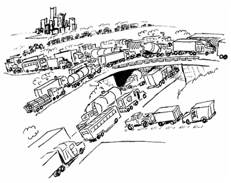
“An INFLUX of TRUCKS”
- South Florida has an INFLUX of northerntourists every winter.
- The INFLUX of peoples of other countries duringthe seventeenth and eighteenth centuries iswhat made America a melting pot.
- We will have to build an addition on to the schoolbecause of the INFLUX of new students.
INTREPID
(in TREP id) adj.
fearless; bold
TRIP ED
“Everyone considered David INTREPID after he
TRIPPED ED, the bully, in the cafeteria.”
- The INTREPID bullfighter stood in the arenabefore the fierce bull.
- Ed INTREPIDLY opened the hatch of the plane ashe prepared for his first jump. (adv.)
- The Green Berets have always been known fortheir INTREPIDITY. (n.)
INUNDATE
(IN un dayt) v.
to overwhelm with abundance
or excess; flood
IAN’S DATE
“IAN was INUNDATED with DATES.”
- After the rains, the fields were INUNDATED withwater.
- During final exams, we are so INUNDATED withschool work that we have no time for fun.
- Jack’s father used to INUNDATE the front yardin the winter so all his friends could ice skate.
INURE
(in YOOR) v.
to get used to something
undesirable; harden
MANURE
“Shoveling MANURE takes awhile to INURE.”
- The prisoner became INURED to his new life inprison.
- After thirty days at sea, Bob was INURED to life ina life raft.
- The substitute teacher was unable to INUREhimself to some of the students.
JAUNT
(jawnt) n.
a short pleasure trip
HAUNT
“A HAUNTED JAUNT”
- After not taking a family vacation for two years, aJAUNT to the beach was a pleasant respite.
- My parents are always taking JAUNTS in theirnew motor home.
- Mary and Bryan always enjoy their annualJAUNT to the mountains.
JETSAM
(JET sem) n.
cargo or equipment thrown overboard
to lighten an imperiled vessel;
discarded odds and ends
JETS
“The JETS became JETSAM.”
- After the ship sank, the crew clung to any floatingJETSAM they could find.
- Jessica found a piece of blue glass on the water’sedge, but her father explained it was merelyJETSAM.
- After a storm, JETSAM is often discovered on thebeach.
KINDLE
(KIN dl) v.
to cause to burn or ignite;
to arouse or inspire
CANDLE
“Patrick found a unique way
to KINDLE CANDLES.”
- Because Christine once had feelings for him, Joethought sending flowers might again KINDLE heraffections.
- It is difficult to KINDLE a fire with damp fire wood.
- The fire KINDLED when he squirted on somelighter fluid.
KISMET
(KIZ met) n.
fate
KISS ME
“KISS ME baby, it’s KISMET.”
- The happy couple attributed the success of theirrelationship to KISMET.
- To those who believe in fate, KISMET is thecause of everything.
- It was KISMET that they both returned to theirold high school on the same day twenty yearsafter graduation.
LACKADAISICAL
(lak ah DAY zi kul) adj.
showing lack of interest; listless
YAK IN THE DAISIES
“A LACKADAISICAL YAK IN THE DAISIES”
- Margaret’s LACKADAISICAL attitude will hurt herchances of getting into college.
- He just stood there LACKADAISICALLY staringinto space. (adv.)
- I would not want to go to a doctor who had aLACKADAISICAL approach to his practice.
LAMBASTE
(lam BAYST) v.
to give a thrashing; to assault violently
LAMB
“The LAMB took a LAMBASTING
from the champ.”
- The drill sergeant LAMBASTED his troops fortheir poor performance on the obstacle course.
- George received a verbal LAMBASTING fromhis father for not doing his chores.
- The fierce storm LAMBASTED the ship and itscrew.
LAMPOON
(lam POON) n./v.
light, good-humored satire; to make the
subject of satire
HARPOON
“A LAMPOON with a HARPOON”
- The president took no offense to the LAMPOONof him on the comedy show, he actually thought itwas funny. (n.)
- When the boss leaves the office, Sylvester alwaysLAMPOONS the poor man’s shortcomings. (v.)
- MAD magazine LAMPOONS many aspects ofAmerican culture. (v.)
LANGUID
(LANG gwid) adj.
lacking energy; weak; showing
little interest in anything
SQUID
“A LANGUID SQUID”
- After his bout with the flu, Joe was LANGUIDand unable to workout for over a week.
- Jill finished the triathlon, but at the finish line sheLANGUIDLY sank to the ground. (adv.)
- The teacher’s LANGUID approach to AmericanHistory did not motivate the class.
LATENT
(LAYT nt) adj.
lying hidden or undeveloped; potential
LAY TENT
“Never LAY your TENT on a LATENT volcano.”
- Trent had a LATENT talent as a singer which hedidn’t discover until he was in his 50s.
- Because the disease was in a LATENT state, noone knew she was ill.
- Jeri’s parents were unaware of her LATENTdesire to study law and to become an attorney.
LITHE
(lythe) adj.
bending easily and gracefully
LIZA
“LIZA is the most LITHE gymnast on our team.”
- The LITHE ballerina stretched her musclesbefore her performance.
- The LITHE gymnast dismounted without a sound.
- The dancer was as LITHE as a cat as he leaptacross the stage.
LOGISTICS
(loh JIS tiks) n.
the management of the details of
an operation
LOGS ANDSTICKS
“Lumber mill LOGISTICS consist
of LOGS AND STICKS.”
- The Normandy invasion is a great example ofmilitary LOGISTICS.
- The LOGISTICS involved in building the GoldenGate Bridge required an immense amount of timeand resources.
- General Eisenhower was an expert of militaryLOGISTICS.
MALADROIT
(mal uh DROYT) adj.
clumsy; inept
DRAW IT
“The MALADROIT artist couldn’t DRAW IT.”
- The MALADROIT painter spilled a can of painton our new carpet.
- Actor Charlie Chaplin, was famous for hisMALADROIT roles.
- Bob was upset with the mechanic’sMALADROIT attempt to repair his car.
MALAISE
(ma LAYZ) n.
a vague feeling of bodily discomfort,
as at the beginning of an illness
MAYONNAISE
“Hal’s MALAISE was brought on
by spoiled MAYONNAISE.”
- Samantha’s MALAISE was later diagnosed asfood poisoning.
- Beth’s MALAISE began when she awoke with asore throat.
- A sudden MALAISE overcame Jonathan whenthe postman delivered a certified letter from theIRS.
MALCONTENT
(mal kon TENT) adj./n.
dissatisfied with existing conditions;
an unhappy person
CONTENT
“Once a MALCONTENT, the prisoner was
now CONTENT with his living conditions.” (n.)
- The MALCONTENT workers decided to strikeagainst the company’s labor policies. (adj.)
- We seem to always have one MALCONTENT inthe group who eventually brings everyone down. (n.)
- The MALCONTENT little boy finally smiled whenhis mother gave him an ice-cream cone. (adj.)
MALICE
(MAL is) n.
a desire or intention to harm
others or see them suffer
ALICE
“ALICE has MALICE towards
door to door salesmen.”
- The prisoner was not granted parole becausehis MALICE was still obvious.
- Our government is based on justice, withMALICE toward none.
- We could not believe that such a young girlcould harbor such MALICE toward herneighbors.
MALODOR
(mal OH dor) n.
a bad odor
BAD ODOR
“Barnyard MALODOR means
barnyard BAD ODOR.”
- After the storm, the MALODOR made it clear thatthe sewers were not working.
- A MALODOROUS stench filled the car after weran over the skunk. (adj.)
- The MALODOR of the stray dog kept us at arm’slength.
MAMMOTH
(MAM uth) adj.
huge; gigantic
MOTH
“A MAMMOTH MOTH”
- Until I visited Manhattan, I could not imagine theMAMMOTH size of the Empire State Building.
- Herman Melville’s title character, Moby Dick, is aMAMMOTH whale.
- When Jane returned from vacation, she found aMAMMOTH amount of work piled on her desk.
MANIFEST
(MAN ih fest) v.
to make clear or evident to the eye; obvious
MAN IN VEST
“The MAN IN THE VEST
MANIFESTED that he is a butler.”
- Rebecca’s flu symptoms MANIFESTED by arunny nose and high fever.
- Larry MANIFESTED his intentions to propose bykneeling on one knee and presenting Mary with adiamond ring.
- Ryan MANIFESTED a sense of urgency when hediscovered he was already 30 minutes late for hisappointment.
MARITIME
(MARE ih time) adj.
near the sea; concerned with navigation
or commerce on the sea
MERRY TIME
“The MARITIME sailors are
having a MERRY TIME.”
- While in our nation’s capitol, we visited theMARITIME War Museum.
- Rick’s desire is to become a MARITIME lawyer.
- Boston is a famous MARITIME city.
MAWKISH
(MAW kish) adj.
excessively and objectionably sentimental
MA’S KISS
“MA’S KISS can be MAWKISH.”
- Elizabeth is so MAWKISH that she cries at everywedding.
- Steve doesn’t care for MAWKISH birthday cards;he likes funny ones instead.
- The bride’s MAWKISH behavior embarrassed thegroom.
METE
(MEET) v.
to distribute by or as if by
measure; to allot
MEAT
“Mom always METES out the MEAT.”
- Allison stood in the doorway in a witch costumeand METED out Halloween candy to all the kids.
- The volunteer fireman METED out sandbags toall worried homeowners.
- The sergeant METED out ammunition to allsoldiers in the platoon.
MOGUL
(MOH guhl) n.
a very rich or powerful person; a magnate
SEA GULL
“A SEA GULL MOGUL”
- Howard Hughes was a famous MOGUL who wasrarely seen in public.
- Leslie’s dream is to marry a MOGUL, have tenkids, and live in luxury.
- After forming Microsoft, Bill Gates became themost recognized computer MOGUL.
MORASS
(mah RASS) n.
anything that hinders, traps or overwhelms;
low-lying, soggy ground
MOLASSES
“The MOLASSES created a MORASS.”
- The MORASS surrounding the castle wasineffective during the dry season.
- The jeep sank deep into the MORASS and couldgo no further.
- The MORASS was too wet for gardening so webrought in some fill dirt.
MOTTLE
(MOT ul) v./adj.
to mark with spots or blotches of different
shades or colors; marked with spots
BOTTLE
“The rare MOTTLED mouse
caught in a BOTTLE” (adj.)
- The Dalmatian’s MOTTLED coat is its salienttrait. (adj.)
- Chicken pox MOTTLED the boy’s skin withlesions. (v.)
- The soldier’s MOTTLED uniform was designedfor camouflage. (adj.)
NEMESIS
(NEM eh sis) n.
an opponent that cannot be beaten
or overcome
MY SIS
“My NEMESIS is MY SIS.”
- Lex Luther considers Superman his NEMESIS.
- Tom is my NEMESIS because I can beat everyonewho beats him in tennis, but I can’t beat him.
- Potato chips are Paul’s NEMESIS; if he takes onebite he can’t stop eating them.
NETTLE
(NET ul) v.
to irritate; vex
SETTLE
“Mosquitoes NETTLE when they SETTLE.”
- My little brother always seems to NETTLE me.
- Hip Hop music NETTLES my parents.
- The squeaky ceiling fan NETTLED me all nightlong.
NOCTURNAL
(nawk TUR nul) adj.
of or occurring at night
NIGHT TURTLE
“A NOCTURNAL TURTLE”
- NOCTURNAL animals sleep during the day andare active at night.
- A NOCTURNAL person is one who stays up lateat night.
- DIURNAL, which means of or occurring during theday, is the opposite of NOCTURNAL.
NULLIFY
(NUL ih fy) v.
to make useless; cancel; undo
FLY
“How to NULLIFY a FLY.”
- Christopher said his agreement to play for theCowboys had been NULLIFIED due to his injury.
- The purchase contract could be NULLIFIEDbecause it had never been signed by the buyer.
- The contract had a 30 day guarantee, thereforeit could be NULLIFIED within that period.
NURTURE
(NUR chur) v.
to nourish, to feed; to educate; to train; to foster
NURSE
“NURSES NURTURE the sick and ailing.”
- Mother birds NURTURE their young.
- Laura NURTURED the abandoned puppy andkept him as her own.
- During her first year of college, Elizabeth oftencalled her mother for some NURTURING words.
OBESE
(oh BEES) adj.
extremely fat; grossly overweight
BEES
“OBESE BEES ”
- Frederick was so OBESE he could not fitthrough the door.
- OBESITY is a problem caused by lack ofexercise, poor diet control, and metabolism. (n.)
- OBESE people are frequently on diets all theirlives.
OBTRUDE
(uhb TROOD) v.
to impose oneself or one’s ideas
on others; to stick out
NUDE
“Ernie hated to OBTRUDE in the NUDE,
but this was an emergency.”
- Dad always liked to OBTRUDE his ideas uponothers.
- Tanya hoped her parents wouldn’t OBTRUDEupon her wedding plans.
- Tina’s OBTRUSIVE personality made it hard forher to make friends. (adj.)
OFFAL
(AW full) n.
waste parts, especially of a
butchered animal; rubbish
AWFUL
“The OFFAL smelled AWFUL.”
- The dog rooted through the OFFAL for scraps offood.
- The young cheetah left the OFFAL of his prey tothe buzzards.
- The butcher saved the OFFAL for his dogs.
OFFICIOUS
(uh FISH us) adj.
interfering; intrusive; eager in offering
unwanted services or advice
OFFICE
“An OFFICIOUS OFFICE helper”
- Uncle Dan was so OFFICIOUS that he wantedto help me work on my antique cars, eventhough he knew nothing about engines.
- The OFFICIOUS waitress would not go away,even when Jennifer told her that she wantedonly coffee.
- Ralph’s OFFICIOUSNESS was an attempt tomake friends which usually backfired on him. (n.)
ONEROUS
(AHN ur us) adj.
troublesome or oppressive; burdensome
OWNER
“A pet shop OWNER’S life
can become ONEROUS.”
- Our platoon was given the ONEROUS duty ofcharging up a well-defended hill.
- After our truck ran out of gas, we had theONEROUS task of pushing it two miles to thenearest gas station.
- The teacher was given a classroom aide becauseher class was so ONEROUS.
OPAQUE
(oh PAYK) adj.
impervious to light; dull; hard
to understand; unclear
FAKE
“This “diamond” is OPAQUE;
it must be FAKE.”
- Jean put an OPAQUE blue glaze on her ceramicteapot.
- The old dishwashing machine left the water glasseswith an OPAQUE finish.
- The problem remains OPAQUE despiteexplanation.
OSTENSIBLE
(ah STEN suh bul) adj.
appearing as such; offered as genuine or real
SENSIBLE
“Taking an OSTENSIBLE short-cut is
not always the SENSIBLE thing to do.”
- Her OSTENSIBLE purpose was borrowing sugar,but she really wanted to see the new furniture.
- The OSTENSIBLE reason that Sam became amember of the golf club was to play golf, but hereally wanted to meet more potential clients.
- Madison OSTENSIBLY goes to the gym to workout, she really likes to talk to all cute guys. (adv.)
PACIFIST
(PAS ih fist) n.
one who is in opposition
of war or violence
FIST
“A PACIFIST never uses his FIST.”
- Julie is such a PACIFIST; she doesn’t even likeviolent movies.
- The PACIFISTS protested the boxing match bylying on the mat and refusing to move.
- Because of Brad’s PACIFISTIC personality, herefused to get into a fight. (adj.)
PALISADE
(pal ih SAYD) n.
a fortification of timbers set in the ground;
an extended cliff
PAL IN THE SHADE
“My PAL IN THE SHADE prefers
to sit under the PALISADES.”
- The king built a PALISADE to fortify his castle.
- The PALISADES of the Grand Canyon are anatural beauty one must visit to appreciate.
- The PALISADE followed coastline, casting ashadow across the beach.
PALLIATE
(PAL ee ayt) v.
to make seem less serious; to mitigate
PAL HE ATE
“The crocodile tried to PALLIATE his
guilt for the duck’s PAL HE ATE.”
- Christopher was given aspirin to PALLIATE hisheadache.
- After Alex’s goldfish died, his mother bought hima puppy to PALLIATE his grief.
- The nurse PALLIATED the patient’s burns byapplying cold, wet bandages to the sensitivearea.
PALPABLE
(PAL pah bul) adj.
capable of being touched or felt
PAL THE BULL
“Our PAL, THE BULL, is PALPABLE.”
- The PALPABLE imagery helps make the poemmore realistic.
- The answer is as PALPABLE as the nose on yourface.
- Fear ran PALPABLY through the crowd as theman wielded a pistol. (adv.)
PANACHE
(puh NASH) n.
dashing elegance of manner or style
MUSTACHE
“Sir Charles’ MUSTACHE is a
symbol of his PANACHE.”
- Eric entered the room with PANACHE, wearinghis new tux, Rolex watch, and $500 shoes.
- It was evident by the woman’s PANACHE thatshe was a member of the royal family.
- Mom was impressed with my PANACHE after Ireturned home from finishing school.
PANDEMIC
(pan DEM ik) adj.
widespread; general
PANDA
“PANDAS are PANDEMIC to China.”
- AIDS has spread in PANDEMIC proportionsaround the world.
- Disco’s PANDEMIC popularity was short-lived inthe 1970s.
- Boating is a PANDEMIC form of outdoorrecreation in Florida.
PANORAMA
(pan uh RAM uh) n.
an unbroken view of a wide area
CAMERA
“A CAMERA for the PANORAMA”
- We enjoyed the scenic PANORAMA while takinga hot air balloon ride.
- The PANORAMA from the top of the EmpireState Building was spectacular.
- The Grand Canyon offers PANORAMIC views ofgreat splendor. (adj.)
PARABLE
(PAIR ah bul) n.
a simple story illustrating a moral
or religious lesson
PAIR OF BULLS
“A PAIR OF BULLS reading a PARABLE”
- My son’s favorite book is one full of PARABLES.
- The story of the boy who cried wolf is aPARABLE about the consequences of tellinglies.
- John’s favorite part of Sunday school is whenthe teacher reads a PARABLE.
PARADIGM
(PAIR ah dime) n.
a pattern that serves as a model or example
PAIR OF DIMES
“A PARADIGM of the new
PAIR OF DIMES”
- Michael Jordan is a PARADIGM of a professionalbasketball player.
- When designing the Luxor Hotel in Las Vegas thearchitects used the Great Pyramids in Egypt astheir PARADIGM.
- The Model-T was used as a PARADIGM by manyautomobile manufacturers in the early 1900s.
PARAGON
(PAIR ah gone) n.
a model or pattern of excellence
PAIR OF GUNS
“A PARAGON PAIR OF GUNS”
- Although Joyce was a PARAGON of virtue, shewas also good fun to be with at the same time.
- While not an architectural PARAGON to becopied, the sturdy old brick house has withstoodmany hurricanes.
- William named his shoe company PARAGONShoes, with expectations customers would thinkhis shoes the best.
PARLEY
(PAHR lee) n.
a conference, especially between
enemies
PARTY
“The PARLEY turned into a PARTY.”
- A PARLEY was scheduled between the leaders ofthe opposing nations.
- The National Football League owners and playersPARLEYED to reach a settlement of salary caps. (v.)
- After a brief PARLEY, the defense attorney andprosecuting attorney agreed to settle the disputeout of court.
PATRIARCH
(PAY tree ahrk) n.
the leader of a family or tribe
PASTRY ART
“The PATRIARCH’S specialty is PASTRY ART.”
- Abraham is considered one of thePATRIARCHS of the Hebrew religion.
- William Bradford led the pilgrims to the newworld and acted as PATRIARCH of the colony.
- The PATRIARCH is the one the tribe turns to forleadership and guidance.
PATRIMONY
(PA trih moh nee) n.
an inheritance from a father or an
ancestor; anything inherited
PAT’S MONEY

“PAT’S MONEY is his PATRIMONY.”
- My mother says my overly large nose is a result ofPATRIMONY since her family all have smallnoses.
- Ill-will in the family was a result of arguing over thePATRIMONY.
- Jonathan squandered his PATRIMONY and diedpenniless.
PECCADILLO
(pek ah DIL oh) n.
a slight or trifling sin; a minor offense
ARMADILLO
“Norm thought running over an
ARMADILLO was a PECCADILLO.”
- The reporters were more interested in thepresident’s personal PECCADILLOES than thestate of the economy.
- Being ticketed for running a red light is a merePECCADILLO compared to driving whileintoxicated.
- Bob couldn’t believe he could be punished forthe PECCADILLO of not cleaning his room atboarding school.
PECUNIARY
(pi KYOO nee er ee) adj.
consisting of or relating to money
PECULIAR DAIRY
“A PECUNIARY PECULIAR DAIRY”
- Alex’s concerns about college were specificallyPECUNIARY.
- Ryan wanted to take Jessie to the prom but didn’task her because of his PECUNIARY problems.
- PECUNIARY troubles are the primary reason formany failed marriages.
PEDESTRIAN
(peh DES tree ahn) adj.
ordinary; moving on foot
PEDESTRIAN
“PEDESTRIAN PEDESTRIANS”
- The PEDESTRIAN crosswalk is marked bywhite lines running across the street.
- For once, can’t we do something that isn’t soboringly PEDESTRIAN?
- The right frame can make a PEDESTRIANpainting look like a million bucks.
PERPENDICULAR
(pur pen DIK yu ler) adj.
upright or vertical; being at right
angles to the plane of the horizon
PEN
“The PEN is PERPENDICULAR
to the pad of paper.”
- The pole is PERPENDICULAR to the ground.
- The tall mast of the sailing ship was builtPERPENDICULAR to the deck.
- Because the wall was not PERPENDICULAR, itgradually succumbed to gravity and fell over.
PERSONIFY
(per SAWN ih fye) v.
to think of or represent as having
human qualities; to typify
PERSON FLY
“Captain Minerich is a PERSON who
PERSONIFIES FLYING.”
- Their child PERSONIFIES every thing that is goodabout each of them.
- In her poem she attempts to PERSONIFY death.
- Benjamin Franklin PERSONIFIES all theattributes of the Revolutionary period.
PHILIPPIC
(fe LIP ik) n.
a verbal denunciation characterized
by harsh, insulting language; a tirade
FLIP IT
“The cook unleashed a PHILIPPIC when
his new helper couldn’t FLIP IT.”
- The coach, in seeking to rouse the team,pronounced bitter PHILIPPICS against theopposing team.
- Rachel unleashed a PHILIPPIC when herbrother broke her bike.
- Dad always directed PHILIPPICS at mewhenever I got a bad grade.
PINGUID
(PEN gwed) adj.
fat
PENGUIN
“A PINGUID PENGUIN ”
- The PINGUID egg roll left a greasy stain on thepaper plate.
- Mom served a PINGUID turkey for Thanksgivingdinner.
- The PINGUIDITY of British food tends to put meoff. (n.)
PINION
(PIN yun) v.
to bind the wings so as not to fly;
to confine
Link:PIN
“The PINS PINIONED the butterfly wings.”
- The handcuffs were used to PINION his hands.
- In order to transport the large bird, the zookeeper PINIONED its wings with soft straps.
- Jake had PINIONED John to the wall beforesomeone could stop the altercation.
PIOUS
(PIE us) adj.
devout or virtuous; holy
PIE
“A PIOUS PIE”
- Elizabeth PIOUSLY said her prayers every nightbefore bed. (adv.)
- The church was adorned with PIOUS artwork fromaround the world.
- The opposite of PIOUS is IMPIOUS, meaninglacking in reverence or respect.
PLETHORA
(PLETH or ah) n.
a state of excessive fullness;
superabundance
FLORA
“A PLETHORA of FLORA”
- There was an awesome PLETHORA of food atthe picnic.
- Jake opened the back door and a PLETHORAof mosquitoes flew in.
- After placing an ad in the paper to sell myCorvette for $200, I received a PLETHORA ofcalls.
PLIABLE
(PLYE ah bul) adj.
receptive to change; easily persuaded
or controlled; easily bent or twisted
FLY BULL
“A PLIABLE BULL convinced he can FLY.”
- Students demonstrate their PLIABILITY whenthey remain open to new ideas. (n.)
- Putty is a PLIABLE material that can be easilyshaped.
- Bob was always PLIABLE to Brenda’s demands.
PLUCKY
(PLUCK ee) adj.
brave and spirited; courageous
Link: DUCKY
“A PLUCKY DUCKY”
- He fought his disease in a PLUCKY way whichwe all admired.
- Her PLUCKINESS made her a perfect candidatefor the debate team. (n.)
- Because Roger has such a PLUCKY attitude,we asked him to be the captain of our sky divingteam.
POLARIZE
(POH luh rize) v.
to break up into opposing factions or groups
POLAR ICE
“The Eskimos could not settle their differences
and decided to POLARIZE the POLAR ICE.”
- The issue of what to have for dinner POLARIZEDthe family; Mom and Sally wanted chicken whileDad and I wanted steak.
- The jury became POLARIZED when half thoughtthe defendant was guilty, and the other halfthought he was innocent.
- The football stadium was POLARIZED into homefans occupying the south bleachers and visitingfans occupying the north bleachers.
POLTROON
(pol TROON) n.
a coward
Link: PLATOON
“A PLATOON full of POLTROONS”
- John is usually not scared of anything, but whenconfronted by a spider he turns into aPOLTROON.
- The POLTROON always fled when he senseddanger.
- Many considered him a POLTROON because hewas in his 30s yet still afraid of the dark.
PORTAL
(POR tul) n.
an entrance, door or gate
PORTHOLE
“A PORTHOLE PORTAL”
- As we stepped through the PORTAL of theSistine Chapel, everyone was awestruck.
- Dante writes about the PORTALS of death in hisThe Divine Comedy.
- The space travelers stepped through thePORTAL into another dimension.
PORTEND
(por TEND) v.
to warn of as an omen; forecast
POOR END
“His teacher PORTENDED that Billy
would come to a POOR END.”
- Black clouds PORTEND that a storm is on the way.
- The Japanese attack on Pearl Harbor PORTENDEDthe United States entering World War II.
- Banks failures and real estate foreclosures are a fewindicators that PORTEND a recession.
PRATTLE
(PRAT l) v.
to babble; to talk meaninglessly
Link: RATTLE
“PRATTLING RATTLEsnakes”
- After Ted awoke from his coma, he began toPRATTLE about the accident.
- The three-year-old PRATTLED for hoursalthough no one understood what she wassaying.
- My mother PRATTLES so endlessly I barely canunderstand what she is talking about.
PREDATORY
(PRED ah tor ee) adj.
victimizing or destroying others
for one’s own gain; pillaging
BREAD STORY
“A PREDATORY BREAD STORY”
- The tiger shark not only looks PREDATORY, butis a PREDATOR.
- The killer whale is a PREDATORY mammal thatis rarely known to harm humans.
- During the Middle Ages, many PREDATORYbands of men roamed England.
PREHENSILE
(pri HEN sil) adj.
adapted for grasping or holding
Link: UTENSIL
“The monkey’s PREHENSILE
tail held the UTENSIL.”
- The elephant uses its PREHENSILE trunk thesame way humans use their hands.
- Because of our thumbs, humans are muchbetter at PREHENSILE movements than aremost other mammals.
- Monkeys are well adapted for climbing treesbecause of their PREHENSILE tails.
PRESENTIMENT
(pre ZEN tih ment) n.
a sense that something is about
to occur; a premonition
PRESENT
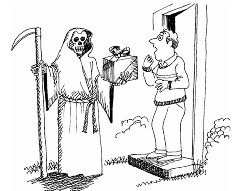
“Ted had a PRESENTIMENT that
he was not going to like his PRESENT.”
- Ray had a PRESENTIMENT that he would hearfrom Tony before the end of the day.
- Jane’s PRESENTIMENT was that one of us wouldwin an Oscar at the Academy Awards.
- The sage had a PRESENTIMENTAL vision of animpending disaster that would befall the village. (adj.)
PRISTINE
(PRIS teen) adj.
extremely pure; untouched
Link: CLEAN
“Marge routinely had her carpets
CLEANED so they would look PRISTINE.”
- The coin discovered under layers of ash was stillin PRISTINE condition.
- Those who know about the island keep it asecret because they want to continue to enjoy itsPRISTINE beaches.
- When the archeologists discovered the cave,they ascertained that it was PRISTINE and thatthey had been the first to examine it.
PRODIGIOUS
(prah DIJ us) adj.
enormous in size, quantity, degree;
marvelous, amazing
DISH
“A PRODIGIOUS DISH”
- The construction of the Panama Canal was aPRODIGIOUS undertaking.
- The trainer managed to escape a ferociouslyPRODIGIOUS lion by climbing a tree.
- The PRODIGIOUSNESS of marathon runnerswho run twenty-six miles in a few hours is trulyextraordinary. (n.)
PROFOUND
(pruh FOUND) adj.
intellectually deep or penetrating; reaching to,
rising from, or affecting the depths of one’s nature
Link: TOES FOUND
“The TOES of King Two TOES
Kahmin was a PROFOUND discovery.”
- Many psychologists believe violence ontelevision and in film has a PROFOUND affecton our behavior toward others.
- Advertising has a PROFOUND affect on thefailure or success of many products.
- My professor is a PROFOUND thinker.
PROPINQUITY
(proh PING kwi tee) n.
proximity, nearness; kinship
PROXIMITY
“The Johnson Twins sit in close PROXIMITY
because of their PROPINQUITY.”
- Because they were in classes togethereveryday, a relationship developed based onPROPINQUITY.
- The PROPINQUITY of Leonardo di Vinci andMichelangelo is remarkable; the two great artistslived at the same time, at the same place.
- Because of the PROPINQUITY of our neighbor’syard, we sometimes hear things we shouldn’t.
PRUDENT
(PROOD ent) adj.
cautious; discreet; exercising
good judgment
Link: STUDENT
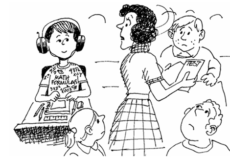
“A PRUDENT STUDENT prepares
ahead for her math test.”
- It is always a PRUDENT choice not to drink anddrive.
- My mother PRUDENTLY guided me throughsome very difficult times. (adv.)
- Michele decided it would be PRUDENT to ignorethe insult and to walk away from such a hatefulgirl.
PSYCHE
(SYE kee) n.
the human soul; the mind
Link: BIKE
“The PSYCHE of a BIKE lover”
- The study of poetry often helps students toexamine their own PSYCHE.
- Because the inmate was so hardened in crime, itwas difficult to imagine that he possessed aPSYCHE.
- A true appreciation for classical literatureengages one’s PSYCHE.
PURBLIND
(PUR blind) adj.
having poor vision; nearly
or partly blind
PURR BLIND
“The PURBLIND cat PURRED as it
was led by its seeing-eye mouse.”
- I am afraid that when it comes to mathematics, Iam PURBLIND.
- The PURBLIND man was undergoing surgery torestore his sight.
- The bright flashes of light from the cameras madethe actor temporarily PURBLIND.
QUAFF
(kwaf) v.
to drink heartily
Link: GIRAFFE
“A QUAFFING GIRAFFE”
- I offered her a sip, but she QUAFFED my entiresoda.
- Fraternity parties often involve the QUAFFINGof large quantities of beverages.
- Many of the senior citizens were guilty ofQUAFFING far too much drink at the early birdspecial.
QUAIL
(kwayl) v.
to shrink with fear; to cower;
to lose heart and courage
QUAIL (bird)
“A QUAILING QUAIL”
- The quarterback did not QUAIL as the defensiveline ran to crush him.
- A leader is one who does not QUAIL in the face ofadversity.
- The previously beaten dog QUAILED each timehis new owner raised his hand.
QUELL
(kwel) v.
to extinguish; to put down or
suppress by force
Link: QUILT
“Grandma QUELLED the fire with a QUILT.”
- The mother attempted to QUELL the infant’scries by singing a lullaby.
- The National Guard was sent in to try to QUELLthe rioting crowd.
- A mob stabbed Caesar in an attempt to QUELLhis power.
QUIETUDE
(KWIE ih tude) n.
calm; tranquility; peacefulness
QUIET DUDE
“Dad was a QUIET DUDE
who sought QUIETUDE.”
- Gene and Chris chose their property for the air ofQUIETUDE and peace that pervaded the area.
- After the long illness, he had finally foundQUIETUDE in death.
- The QUIETUDE of the substitute teacher took thewhole class by surprise.
RAFFISH
(RAF ish) adj.
cheaply vulgar in appearance or
nature; tawdry; disreputable
Link: FISH
“A RAFFISH FISH”
- The RAFFISH character had been seen at thescene of the murder and was taken in forquestioning.
- Pete’s parents were shocked to see theRAFFISH living conditions of his college dorm.
- Because of his RAFFISHNESS, the authoritiesescorted him from the stadium. (n.)
RANSACK
(RAN sak) v.
to search thoroughly; pillage
RAN SACK
“The police RAN in SACKS to RANSACK
the suspect’s apartment.”
- April was late for school and RANSACKED herroom in order to find her car keys.
- The thieves not only broke in, but they alsoRANSACKED the office looking for valuables.
- The king and his men were busy RANSACKINGthe village and did not know a truce had beencalled.
REIGN
(rayn) n.
the exercise or possession
of supreme power
Link: RAIN
“Frogs REIGN in the RAIN.”
- Queen Elizabeth has REIGNED over Englandsince the 1950s.
- Many believe the king’s REIGN was strikinglyenlightened.
- The new winner of the Miss America pageantbegan her REIGN by taking the crown of lastyear’s winner.
REPLETE
(rih PLEET) adj.
full or supplied to the utmost; gorged
PETE
“PETE was REPLETE with
supplies for his camping trip.”
- We ordered our pizza with “the works”; it wasREPLETE with sausage, ham, pepperoni, olives,onions, and anchovies.
- Craig was well prepared for his fishing trip; hisREPLETE tackle box had every kind of lure.
- The REPLETE buffet had many tantalizingdishes.
REPROACH
(rih PROACH) v./n.
to express disapproval of; an
expression of disapproval
COACH
“The COACH REPROACHED his players.” (adj.)
- Jessica’s teacher wrote a recommendation for herbecause her work had always been above REPROACH. (n.)
- The mother REPROACHED her daughter for notcleaning her room. (v.)
- Although he realized his behavior was not beyondREPROACH, he didn’t think it was bad enough forhim to be suspended from school. (n.)
REQUISITE
(REK kwuh zit) n.
essential; necessary
Link: WRECK SIT
“It’s not REQUISITE to SIT on the
WRECK until the police arrive.”
- On the first day of class the teacher explainedthat doing our homework is not only important, itis REQUISITE.
- Successfully completing Latin I is REQUISITE totaking Latin II.
- This movie is a REQUISITE for movie buffs.
RESPITE
(RES pit) n.
delay; postpone; a brief
interval of rest
REST A BIT
“After pitching a double header, David
took a RESPITE to REST A BIT.”
- The condemned man was given a RESPITE toenjoy his favorite meal before his execution.
- The class had worked so hard throughout thesemester that the teacher gave them a RESPITEbefore their exam.
- The hikers enjoyed a much needed RESPITEafter hiking for two hours on the arduous trail.
RHETORIC
(RET or ik) n.
the art or study of using language effectively
and persuasively; over-elaborate language
Link: RENT-A-WRECK
“A salesman‘s RENT-A-WRECK RHETORIC”
- Famous sportscaster, Howard Cosell, is wellknown for his RHETORICAL sports analysis. (adj.)
- The politician’s speech was mostly RHETORICand lip service.
- William Cullen Bryant was a master ofRHETORIC and one of our country’s mostfamous editors.
RIFE
(ryfe) adj.
abundant; great in number or amount
LIFE
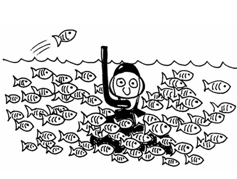
“The ocean is RIFE with LIFE.”
- The new, tough administrator was sent to takeover the hospital which was RIFE with problems.
- When I got my paper back, it was covered withred ink; the teacher said it was RIFE with errors.
- Brad’s dorm was RIFE with cockroaches.
ROTE
(roht) n.
a memorizing process using routine or
repetition, often without comprehension;
learned or memorized by rote
Link: ROPE
“ROTE ROPING”
- Foreign languages are no longer taught byROTE.
- Although Allison had not been in a church foryears, by ROTE she knew how to do everythingcorrectly.
- Learning vocabulary by ROTE may helpyou pass a test in the short term, but may not beeffective in the long term.
RUMINATE
(ROO mih nate) n.
to ponder; to reflect upon
ROOMMATE
“Larry didn’t have to RUMINATE about
taking this guy as a ROOMMATE.”
- Because she had made up her mind, Nancy didnot need time to RUMINATE when Pete askedher to marry him.
- Sitting in detention, Scott had plenty of time toRUMINATE about what his parents were going tosay when he got home.
- Michael often RUMINATED about the day whenhis horse would win the Kentucky Derby.
SAGA
(SAH gah) n.
a long story, often telling
the history of a family
Link: GAGA
“A GAGA SAGA”
- The SAGA of Odysseus has been retoldthroughout history.
- I thought Jennifer wanted to tell me about herargument with her mother, but after twentyminutes I could see it was turning into a SAGA.
- Moby Dick is a SAGA of the sea written byHerman Melville.
SAGE
(sayj) n.
a person of wisdom and prudence;
wise through reflection and experience
PAGE
“A SAGE reads each PAGE.”
- During ancient times a SAGE was consulted formomentous decisions.
- Native American tribes regarded their medicineman as a SAGE with special healing powers.
- In our family we consider our grandparents theSAGES of the family.
SCRUPULOUS
(SKROO pyu les) adj.
careful of small details; honest; conscientious
Link: SCREWS
“Aircraft manufacturers must be SCRUPULOUS
with the placement of SCREWS.”
- Because his parents are such SCRUPULOUSpeople, Jim knew the difference between right andwrong even as a small boy.
- President Abraham Lincoln is known for hisSCRUPULOUSNESS. (n.)
- The clerk SCRUPULOUSLY followed the man tohis car to give him the change he had forgotten. (adv.)
SEDENTARY
(SED en ter ee) adj.
characterized by or requiring much
sitting; accustomed to little exercise
Link: SIT AND STARE
“SEDENTARY Larry often would SIT AND STARE.”
- “A SEDENTARY lifestyle can lead to heartproblems,” the doctor explained as he urged thepatient to exercise regularly.
- Because of a stroke, the normally active womanwas forced to lead a more SEDENTARY life.
- The SEDENTARY nature of a secretary’s jobwould make it impractical for a restless person.
SEETHE
(seeth) v.
to be agitated, as by rage; to
churn and foam as if boiling
TEETHE
“Babies SEETHE when they TEETHE.”
- The class watched the SEETHING teacher take adeep breath before she reprimanded the student.
- When he learned that his kingdom had beenconquered, the king SEETHED with anger.
- I could see my father start to SEETHE as he readthe phone bill.
SERENE
(suh REEN) adj.
clear; calm; tranquil
Link: SCENE
“Teachers often daydream
of a SERENE SCENE.”
- The Mona Lisa has a SERENE smile.
- Game day dawned with a SERENE sky.
- The highlight of our cruise is when we snorkeledin the SERENE waters of the Cayman Islands.
SHUNT
(shunt) v.
to move or turn aside; to evade
by putting aside or ignoring
RUNT

“The mother dog SHUNTING the RUNT of the litter”
- The crash was caused by failure of the engineerto SHUNT the train onto the proper rails.
- After smoking for twenty nine years, Larry found ithard to SHUNT his bad habit.
- The running back dashed down the fieldSHUNTING right and left to avoid the tacklers.
SKULLDUGGERY
(skul DUG uh ree) n.
trickery; underhandedness
Link: SKULL DUG
“Young Indiana Jones was
up to some SKULLDUGGERY.”
- The charlatan was guilty of SKULLDUGGERY.
- In order to capture ships at sea, pirates wouldpractice all types of SKULLDUGGERY to gainan advantage over their prey.
- After his arrest, he admitted to numerous countsof SKULLDUGGERY that had plagued his townfor years.
SLAKE
(slayk) v.
to quench; to satisfy a craving
LAKE
“Larry SLAKED his thirst in the LAKE.”
- During halftime, the quarterback tried to SLAKEhis thirst by drinking Gatorade.
- Ben read everything he could in an attempt toSLAKE his desire for knowledge.
- Jeannie SLAKED her nicotine craving by goingoutdoors to have a cigarette.
SPAWN
(spahn) v.
to give rise to; to produce in large
numbers
Link: YAWN
“A SPAWNED YAWN”
- Salmon always return to their native streams toSPAWN.
- Joe’s negative outlook SPAWNED hard feelingsin his teammates.
- The flu outbreak SPAWNED major attendanceproblems at the school.
SPECTER
(SPEK ter) n.
a ghost or phantom
SPECTACLES
“A SPECTER with SPECTACLES”
- After the kids yelled “trick or treat,” a SPECTERappeared in the door causing them to run awaywithout getting any candy.
- As the lights came up on stage, a SPECTERseemed to materialize from nowhere.
- We ran from the house after we saw a SPECTERcome down the staircase.
SPURIOUS
(SPUR ee us) adj.
not genuine; false
Link: SPURS
“SPURIOUS SPURS”
- The politician made SPURIOUS claims about hisopponent’s views of labor reform.
- The police discovered cheap items which werecarrying expensive labels being SPURIOUSLYmanufactured in an illegal operation in the city. (adv.)
- An expert was called in to examine the antiquesfor SPURIOUSNESS. (n.)
SQUALID
(SQUAW lid) adj.
dirty and wretched, as from poverty or lack of care
SQUID
“A SQUALID SQUID”
- The house was completely run down; it wasamazing how someone could live in suchSQUALID conditions.
- After the old recluse had died, animal loversmade their way through the SQUALIDITY of herhome as they rescued eighty cats. (n.)
- Upton Sinclair wrote about the SQUALID life ofthe meat packers in Chicago during the early1900s.
STALACTITE
(stah LAK tite) n.
a tapering formation hanging from the
ceiling of a cave, produced by the
dripping of mineral-rich water
TIGHTS
“STALACTITES hang down
like her loose TIGHTS.”
- As we worked ourselves through the cave we hadto be aware of STALACTITES so we wouldn’tbump our heads.
- The icicle looked like a giant STALACTITE as itgrew drip by drip during the winter.
- Another way to remember STALACTITE is: A STALACTITE has to hold TIGHT to the ceiling soit won’t fall.
STALAGMITE
(stah LAG mite) n.
a conical mineral deposit formed on
the floor of a cave by the dripping of
mineral-rich water
MITES
“The MITES climb up the STALAGMITES.”
- The STALAGMITE grew straight up in thecenter of the cave.
- While exploring the cave, I tripped over a huge STALAGMITE.
- It is hard to believe that a giant STALAGMITE was once just a lump on the cave’s floor.
STRIFE
(stryfe) n.
bitter conflict; quarrel; fight
LIFE
“There was little STRIFE in Amanda’s LIFE.”
- He was thin and gaunt and had led a life full of STRIFE.
- It was a time of great STRIFE in the kingdombecause of three seasons of failed crops.
- A life of poverty is filled with much STRIFE.
SUBLIME
(suh BLYME) adj.
impressive; inspiring awe; majestic
SUB LIME
“The Navy’s new SUB LIME
was SUBLIME.”
- The lecturer had something to offer each of hislisteners; he was a master of moving his speechfrom the ridiculous to the SUBLIME.
- The SUBLIME melody worked itself throughoutthe entire musical.
- The priest’s SUBLIME voice made him theobject of admiration in his parish.
SUCCINCT
(suhk SINGKT) adj.
brief and to the point; concise and terse
SINK
“Virginia was SUCCINCT when
Ernie forgot to fix the SINK.”
- When Joe was called upon, he SUCCINCTLY paraphrased what the teacher had just explained. (adv.)
- The policeman asked the witnesses to be SUCCINCT in recounting what they saw.
- The mother’s reprimand was SUCCINCT buteffective.
SUPINE
(SUE pine) adj.
lying on the back with the face
turned upward; inclined
SPINE
“Lying SUPINE on the SPINE”
- When the investigators arrived, the body was SUPINE in the middle of the living room floor.
- The chiropractor had Jill lie in a SUPINE positionso he could adjust her neck.
- The referee stopped the fight when the boxer layon the mat in a SUPINE position and could notget up.
SURMISE
(sur MIZE) v.
to guess; to infer (something)
without sufficient evidence
SUNRISE
“Run for cover, I SURMISE a SUNRISE!”
- The detective was able to SURMISE the identityof the murderer by the clues left behind.
- When everyone began to laugh, I SURMISED thatI had been the butt of a practical joke.
- Beginning with the very first date, Liz is good at SURMISING how a relationship will turn out.
SURREPTITIOUS
(sur ep TISH us) adj.
done or acting in a secret, sly manner
SUSPICIOUS
“To escape from the circus, an elephant has to be
SURREPTITIOUS without being SUSPICIOUS.”
- The SURREPTITOUS lion stalked its prey frombehind the tall grass.
- Helen SURREPTITIOUSLY crept around thecar, hoping to get the cat out from under it. (adv.)
- The magician was so SURREPTITIOUS duringhis magic trick that the audience was completelyfooled. (n.)
SVELTE
(sfelt) adj.
slim, slender
FELT
“Tina FELT great when she became SVELTE.”
- The ballerina appeared as SVELTE as an angelas she floated effortlessly across the stage.
- One way to stay SVELTE is to exercise and eatright.
- The SVELTE waitress was able to move easilybetween the closely arranged tables.
SYMMETRY
(SIM ih tree) n.
exact correspondence of form on
opposite sides of a dividing line
CEMETERY
“SYMMETRY in the CEMETERY”
- The SYMMETRY of the garden added to itsbeauty.
- The SYMMETRY of the Golden Gate Bridge is anawesome sight.
- The dancers’ SYMMETRY required lots ofpractice to perfect.
SYNCHRONIZE
(SING kra nize) v.
to occur at the same time; simultaneous
SINK
“The commandos SYNCHRONIZED their SINKS.”
- SYNCHRONIZED swimming is entertaining towatch. (adj.)
- The captain had his troops SYNCHRONIZE theirwatches in order to begin the attack at the sametime.
- One of the jobs of a film editor is toSYNCHRONIZE the stunts so the audiencecannot detect where the stuntman took over.
TANTALIZE
(TAN tul ize) v.
to excite by exposing something desirable while
keeping it out of reach: to tease
SANTA’S LIES
“SANTA’S LIES TANTALIZE.”
- The TANTALIZING aroma of the bread made usall very hungry.
- Jessica would TANTALIZE all the boys with herbeauty but would never accept a date.
- Although the prospect of extra money wasTANTALIZING, Joe refused to break the law toget it.
TAUT
(tawt) adj.
stretched tight; tidy
CAUGHT
“Eric CAUGHT a lot of fish
because his line was TAUT.”
- The sailor pulled the lines TAUT, so he couldsail against the wind.
- As he stared down the snout of the bull, thetoreador’s muscles became as TAUT as pianowire.
- The commander was proud that he ran such a TAUT ship.
TAWDRY
(TAW dree) adj.
gaudy and cheap in appearance or nature
AUDREY
“TAWDRY AUDREY”
- Scott gave Rhonda a TAWDRY engagement ringand could tell by her face that she didn’t like it.
- Shirley’s TAWDRY dress was the talk of all thegossips.
- The innocent children believed the TAWDRY jewels in their mother’s bureau were worth afortune.
TENACIOUS
(teh NAY shus) adj.
tough; stubborn; not letting go
TENNIS ACES
“TENNIS ACES are TENACIOUS.”
- The fisherman finally landed the TENACIOUSmarlin after a three and a half hour fight.
- Susan’s TENACIOUS efforts to learn Englishwon her the admiration of her teacher.
- We had no luck eradicating the TENACIOUS weeds in our front lawn.
TERSE
(turs) adj.
brief and to the point; concise
VERSE
“A TERSE VERSE”
- Rich could tell he had annoyed his teacher whenshe gave him a TERSE reply.
- Hemingway is best known for his TERSE style ofwriting.
- When Sally becomes annoyed and wants to makeher point, she becomes very TERSE.
THRONG
(throng) n./v.
a large group of people gathered
closely together; to crowd upon
SONG
“The THRONG broke into SONG.” (n.)
- When the Pope visited the United States, anadmiring THRONG gathered at every major city. (n.)
- A THRONG of revelers gather at Times Squarein New York City on New Year’s Eve. (n.)
- The assassins THRONGED around Caesarbefore they murdered him. (v.)
TOME
(tohm) n.
a large book
HOME
“A bookworm’s HOME is a TOME.”
- The witch pulled a TOME from the shelf andlooked for a spell.
- Thank goodness encyclopedias are now on CD-romso we don’t have to find room for all those TOMES in our house.
- The professor carried the Shakespearean TOME as if it were a Bible.
TORPID
(TOR pid) adj.
dormant; inactive; lethargic
TORPEDO
“TORPID TORPEDOES”
- The teacher could not understand the boy’s TORPID reactions until she learned that he couldnot understand English.
- During winter, bears sleep TORPIDLY in caves. (adv.)
- Volcanoes may be TORPID for centuries and oneday suddenly erupt.
TORRID
(TOR id) adj.
intensely hot; burning;
passionate; rapid
POOR ED
“POOR ED never survived the TORRID desert.”
- The TORRID heat and wind are what led to theDust Bowl of the 1930s.
- Many romance novels contain TORRID loveaffairs.
- The salesman TORRIDLY spoke to the grouphoping to sell them a time share in paradise. (adv.)
TRAVAIL
(truh VAYL) n.
strenuous physical or mental labor
or effort; the labor of childbirth
TRAIL
“Much TRAVAIL was required
crossing the Oregon TRAIL.”
- Modern medicine has helped lessen the TRAVAIL of childbirth.
- When he saw his flourishing crops, he realized his TRAVAIL had been worth it.
- Her face showed the lines of her TRAVAIL withcancer.
VALIDATE
(VAL ih dayt) v.
to declare legally valid; legalize
VAL’S DATE
“Ken VALIDATED himself as VAL’S DATE.”
- The couple decided to marry and VALIDATE their relationship.
- The award gave Sue a sense of VALIDATION that her work was important. (n.)
- The parking ticket had to be VALIDATED by oneof the merchants.
VENT
(vent) n./v.
a means of escape or release;
an outlet; a small hole; to release
VENT
“Professor Jones VENTING his frustration” (v.)
- George felt the need to VENT his anger in classeven if it resulted in suspension. (v.)
- As the boys searched the coastline, they found a VENT in which they could hide. (n.)
- At the funeral everyone gave VENT to theiremotions by openly weeping. (v.)
VORACIOUS
(vo RAY shus) adj.
an insatiable appetite for an activity or pursuit;
eager to consume great amounts of food
GOOD GRACIOUS
“GOOD GRACIOUS, what VORACIOUS fish.”
- The dog’s VORACIOUS appetite could not besatisfied with small treats.
- Piranha are VORACIOUS carnivores.
- Teenage boys tend to be VORACIOUS eaters.
WAFFLE
(WOF ul) v.
to speak or write evasively
WAFFLE
“A WAFFLE WAFFLING on the questions.”
- When asked by the journalist if he felt he wasdeserving of the Oscar, the actor WAFFLED onhis reply since he knew he had done very littlereal acting.
- The president knew he would need to WAFFLE on some of the questions the press would askabout the scandal surrounding his administration.
- Speech writers make a living WAFFLING on theissues.
WINCE
(wints) v.
to flinch; to shrink back or start
aside, as from a blow or pain
PRINCE
“The PRINCE WINCED when he
slipped on Cinderella’s glass slipper.”
- When she saw her test score, she WINCED atthe thought of having to show it to her parents.
- Certain sounds, like the scratching of fingernailson chalk boards, seem to make most people WINCE.
- The puppy WINCED when the man tried to petit.
WINNOW
(WIN oh) v.
to get rid of undesirable parts
MINNOW
“They WINNOWED the MINNOWS.”
- The proofreader WINNOWED all the grammaticalerrors in the article before it went to press.
- When the children were allowed to choose theirown groups, a natural WINNOWING occurred.
- The wild dogs WINNOWED the offal, trying to getsome nutrition.
WRATH
(rath) n.
extreme or violent rage
RATS
“Monica revealing her WRATH for RATS”
- The Puritans feared the WRATH of God aboveall else.
- After she had been caught cheating, Judiawaited the WRATH of the assistant principal.
- Her eyes were full of WRATH as she glared athis new girlfriend.
WRITHE
(ryth) v.
to cause to twist or bend; to suffer
acutely, as in pain or embarrassment
RIDE
“Wild horses WRITHE when cowboys RIDE.”
- The fish WRITHED free of the hook and escapedback into the sea.
- Some forms of dance make it look as though thedancer is WRITHING in pain.
- Tina WRITHED when the class heard she hadfailed chemistry for the third time.
ZENITH
(ZEE nith) n.
the peak; the highest point
BENEATH IT
When the Sun is at its ZENITH,
you are directly BENEATH IT.”
- The sun reached its ZENITH at noon.
- Nick Faldo claimed that winning The MastersTournament was the ZENITH of his golfing career.
- After the whale broke the water, he reached his ZENITH before he started his descent.